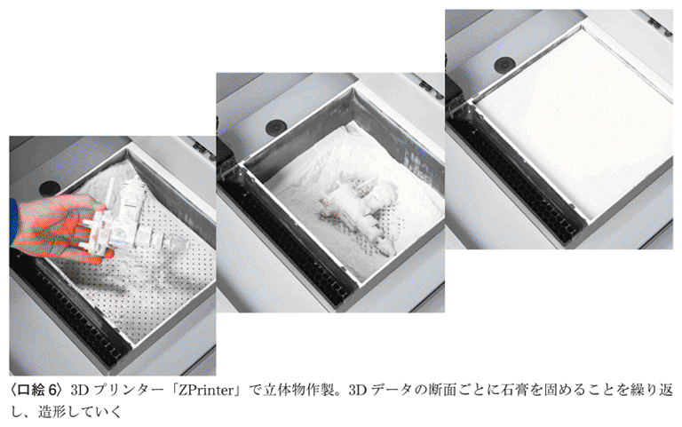
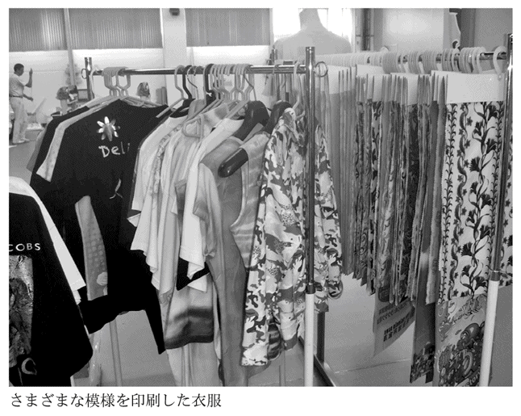

| インクジェット時代がきた！～液晶テレビも骨も作れる驚異の技術～ (光文社新書) | |
| 山口 修一 & 山路 達也 | |
| 光文社 (2012) | |

図版製作／デマンド
はじめに――傾きつつある日本のものづくり産業
２０１２年初頭、日本の製造業は悪夢のような状況に陥りました。パナソニック、ソニー、シャープの３社合わせた最終損益は１兆２９００億円の赤字。２月には、国策会社の側面が強かった半導体メーカーのエルピーダメモリが倒産......。日本のものづくりは崩壊しはじめているのではないか、そんな意見がニュースでひんぱんに飛び交うようになりました。
日本企業、特に製造業分野での企業が窮地に陥っていることには、複雑な要因が絡み合っています。たとえば、高度経済成長期に確立された日本の雇用スタイルは、現在のように変化の激しい状況に対応できません。高い労働コストでつくられた製品は海外市場における競争力が低下しつつあります。
日本の製品は過剰品質になっているといわれることも多いようです。しかし、品質を下げて発展途上国との価格競争に走れば、労働コストの高い先進国が苦しくなるに決まっています。
日本製品が割高というより、高くても買ってもらえる高付加価値の製品をつくれないでいるところに問題点があるのでしょう。
ならば、高付加価値の製品とはどのようなものでしょうか。それは、魅力的なデザインと使いやすさを兼ね備えた情報端末であったり、難病に効く薬品であったり、所有することに満足を覚えるブランド品であったりするのかもしれません。
同じ製品を大量につくって大量に消費させるという20世紀型のモデルは、もはや通用しなくなりつつあります。先進国になった日本のものづくりは、高くても買ってもらえる製品、他ではつくれない製品を目指す必要があります。
こうした新しい産業のあり方を目指すうえでキーワードとなるのが、「デジタルものづくり」です。製造業分野でのＩＴ活用は進んでいますし、「何を今さらデジタルだ」と思われる方もいらっしゃるかもしれません。
しかし、ここでいうデジタルものづくり革命とは、たんにものづくりのプロセスにデジタル技術を導入することではありません。ものづくりの本質的なありよう、それ自体をデジタルにするということなのです。
従来のものづくりのプロセスをイメージしてみてください。たとえば、プラスチックのおもちゃをつくる工場では、金型に溶かした樹脂を流し込み、大量に製品をつくっていきます。大量生産品をつくるためには最も効率的な方法です。
一方、デジタルものづくりでは、材料の細かな粒を一つ一つデジタル制御し、望みの形をつくっていきます。すべてを一品モノとしてつくることができ、材料の無駄もありません。
こんなことが可能なのでしょうか？ モノを効率的に安価につくるために金型などを使うわけで、一品モノをつくるのであれば手工業と同じことなのではないのでしょうか？
実は、デジタルものづくりを行うための技術はすでに登場し、実用化されています。中でも代表的な技術が「インクジェット」です。
インクジェットと聞くと、家庭やオフィスで印刷を行うプリンターをまず思い浮かべることでしょう。しかし、美しい写真を印刷するインクジェットプリンターは、新たな時代を拓くこの技術の、一番シンプルな応用例に過ぎません。インクジェット技術を用いた「デジタルものづくり革命」は、深く静かに進みつつあります。
このインクジェット技術に早くから取り組み、ものづくりへの応用を目指してきたのが、マイクロジェットの山口修一社長です。山口氏が熱く語るインクジェットの可能性に、筆者（山路）も魅了され、ものづくりのみならず、社会を大きく変革するのではないかという予感を抱きました。
インクジェット技術とはいったい何なのか。そして、それによってなされるデジタルものづくりによって何が実現するのか。それをこれから見ていくことにしましょう。
山路 達也
目 次
モノに囲まれた私たちの暮らし
あなたは、家電量販店やショッピングモールで買い物をするのが好きですか？ 最新型の家電製品に、流行の服、何を買えばいいのか迷うほど膨大なモノが集積された空間はまさに豊かさの象徴であり、それらを見るだけで私たちの心は弾みます。
その一方、これだけ大量に多種多様なモノが並んだ光景に、ふと薄ら寒さを感じる瞬間もあります。「いったいどれほどの材料やエネルギーが、これらをつくる過程で使われているのだろうか」と。
『自然資本の経済』（ポール・ホーケン＋Ｌ・ハンター・ロビンス＋エイモリ・Ｂ・ロビンス、日本経済新聞社）にはこう書かれています。
アメリカの平均的中流家庭一世帯が一年間に必要とするものを生産するために、企業が、運搬、発掘、採取、かき除き、燃焼、廃棄、汲み上げ、処理する資源の量は四〇〇万ポンド（※筆者補足：約１８００トン）にも達する。（１００ページ）
産業の製造工程で出る廃棄物の量はすさまじく、「半導体チップの生産では重量の10万倍、ラップトップコンピューターでは重量の約４０００倍の廃棄物」「紙を１トン生産するには、さまざまな資源が98トンも必要とされる」といいます。
また、『地球持続の技術』（小宮山宏、岩波書店）にはこうあります。
一トンの素材を作るのに、鉄の場合六〇〇キロ、プラスチックなら一トン、セメント一〇〇キロ、ガラス二〇〇キロ、紙三〇〇キロといった割合で化石資源を消費する。（52ページ）
こうしてつくられた製品がすべて消費者の手にわたっているとは、誰も思わないでしょう。店頭で目にする商品のかなりの数が、そのまま廃棄処分されているのが現状です。むしろ、ブームやシーズンが終われば、多くの製品はそのままゴミとなる運命なのです。
自分だけのモノが欲しい！
はるか昔には、モノは一つ一つ手でつくるしかありませんでした。やがて、「型」や「版」を使ってより効率的にモノを生産する方法が生み出されました。そして、産業革命以降、モノの生産性は飛躍的に向上します。自動化、機械化の「仕組み」を一度つくってしまえば、膨大な数のモノを、手間をかけずに生み出せるようになったのです。
機械で大量につくれば、人間が手づくりするよりも、一つ当たりの材料やエネルギーは少なくてすみます。もしも、人間が必要とするモノを必要な量だけ生産することが可能ならば、材料やエネルギーの使用量を最適化して、無駄をなくすこともできるでしょう。しかし、社会主義の崩壊を見てもわかるように、純粋な計画経済は失敗に終わりました。
他人が持っているのとは違う自分だけのモノが欲しい。それは、人間の本能かもしれません。
20世紀に入ると、アメリカなどの先進国を中心に、一般庶民の間でも大量消費の文化が花開きます。たんに機能が優れたモノが手に入ればよいのではなく、他人と異なるモノを人々は求めるようになっていきました。
そんな大量生産の代表例として紹介されるのは、１９０８年に登場した自動車、Ｔ型フォードです。流れ作業によって生産性を格段に向上させたことで、Ｔ型フォードは一般庶民にも手が届く値段となり、大変な人気商品となりました。しかし、１９２０年代になると、Ｔ型フォードは時代遅れになり、ＧＭにシェアを奪われることになります。
「ボディカラーはお好み次第。ただしそれが黒である限り」
これはヘンリー・フォードの有名な言葉ですが、Ｔ型フォードのデザインは一つ、色も黒だけでした。これに対して、ＧＭは多彩なボディカラー、デザインで消費者の心をつかんでいったのです。
消費者の好みに応えられる多種多様な「型」を用意し、実際に必要とされている以上のモノを大量生産する。そして、広告によって消費者の欲望を刺激し、大量消費をうながす。現代の消費社会はこうして形成されていきました。
日本では１９７０年代に、大量生産に適した工業社会が完成したといえるでしょう。生産技術も進歩し、多品種少量生産も実現できるようになりました。
１９８０年、コピーライターの糸井重里氏は「じぶん、新発見。」という西武百貨店の広告コピーを書きました。これは、企業による大量生産商品を消費するのではなく、個性的な自分を発見することが重要ではないかという問いかけでした。もっとも、その個性とは、企業の多品種少量生産品からいかに自分に合ったものを選ぶかに過ぎなかったような気もしますが。
地球上の資源は無限ではない
安価な石油と進歩した生産技術によって、大量生産・大量消費のサイクルはその回転スピードを上げていきました。
化石燃料、その他の資源を掘り出し、加工して価値を付加し、それをカネに変換するという考え方が、資本主義経済の根幹にはあります。こうした考え方において重要なのは人間の知恵そのものであり、自然から得られる資源にはそれほど重きが置かれていません。
たとえば、ケイ素（シリコン）はどこにでもある物質ですが、高度な精製技術によって純度を高めて加工することで、半導体がつくられます。半導体価格のうち、材料となるシリコン分の価格は微々たるものです。
20世紀まで人類は資源が無限にあるかのようにふるまってきましたが、それは錯覚でした。化石燃料はもちろん、銅をはじめとするさまざまな金属資源の供給が逼迫した状況にあります。
産業においては莫大な量の水を使いますが、淡水も貴重な資源です。水は海にいくらでもあるように思えますが、人間が利用できる地表の水はごくわずかで、今後世界的に深刻な水不足になると予想されています。海水を淡水にする技術もありますが、そのためには莫大なエネルギーが必要です。中東では石油を燃やした熱で海水を蒸発させて淡水をつくっていますが、そうした地域では淡水化石燃料であるといえます。
21世紀になり、限られた化石燃料や鉱物資源などのリソースをいかにして有効に使うかに注目が集まるようになりました。１９７０年代のオイルショックを経て、省エネ、省資源化を進めていた日本はもちろん、製造業をはじめ、あらゆる分野で「リソース最適化」の動きが進んでいます。
ベストセラーになった『シェア 〈共有〉からビジネスを生みだす新戦略』（レイチェル・ボッツマン＋ルー・ロジャース、日本放送出版協会）では、モノやサービスを共有することでリソースを最適化するさまざまなビジネスモデルが紹介されています。すでにつくられてしまったモノをより効率的に利用することで、過剰なモノの生産を抑制しようというわけです。
製造業でも生産技術は日進月歩で進んでおり、自動車分野では車体の軽量化やハイブリッドエンジンによる燃費の向上が行われています。車体軽量化については、中空の鋼管を加工して強度を維持したまま軽量化する技術や、炭素繊維やアルミニウム合金、マグネシウム合金などの代替材料が研究されています。生産技術全般についても、トヨタの「カイゼン」に代表されるムダ取りがなされ、使用する材料やエネルギーの低減化が図られています。
型を使わない新しい製造技術
従来の手法を改良すること以外にも、まったく新しいアプローチでリソース最適化を行う手法も登場してきました。
これまでの生産手法というのは、先に述べたように「型」を使います。リソース最適化も、あくまで型を元につくることを基本としています。
これに対して、型を使わずすべてを「一点物」としてつくる。しかも低コスト、高速で。そんな手法が近年になって注目されるようになってきました。
一点物をつくるのは高コストだったからこそ、型を使った大量生産が行われるようになったはずなのに、型を使わないというのはどういうことでしょうか？
新しい生産技術の代表例は、「インクジェット」です。年賀状や写真を印刷するためのプリンターとしておなじみのインクジェットプリンターが、ものづくりにおいて大きな変革をもたらそうとしています。
大流行したプリントゴッコ
写真や年賀状を印刷するのに使われるインクジェットプリンターが、新しい生産技術の象徴というのは大げさだと思われることでしょう。
しかし、インクジェットプリンターには従来の技術にはない、さまざまな特徴が備わっています。
年賀状印刷を例に取ってみましょう。
イモやゴムの版画では、まず最初に「版」をつくります。その版にインクをつけて、同じデザインを何枚も印刷します。
これは、一世を風靡したプリントゴッコでも同じです。使ったことがある人ならおわかりでしょうが、下絵を描いたらフラッシュランプを使って専用フィルムに転写します（このフィルムがイモ版の「版」に相当します）。焼きつけられた部分は細かい穴が空いてインクを透過させるようになります。あとは、インクをフィルムの上に載せて、印刷したい紙に押しつけると、インクがフィルムからしみ出て絵が印刷されることになります。ちなみにこれは、シルクスクリーンという技法を簡単にできるようにしたものです（２０１２年12月をもってプリントゴッコ事業は終了）。
さて、インクジェットプリンターですが、こちらは事前に「版」や「型」は必要ありません。あえていうなら、パソコンのメモリ内にあるデータが「型」ということになるでしょう。
年賀状ソフトやフォトレタッチソフトでつくられたデータにしたがい、インクジェットプリンターはインクを紙に打ち込んでいきます。元になるのはデジタルデータですから、いかようにでも加工することができます。アドレス帳データを参照して宛名書きをするのはもはや当たり前になっていますが、宛先ごとに異なる文字を入れ込んだり、あるいはまったく異なるイラストや写真を印刷させることだってできるわけです。
インクの消費量が少ないことも、インクジェットプリンターのポイントでしょう。
版画やプリントゴッコで印刷するとき、版にはべったりとインクがついていて、うっかり触ると手が汚れてしまった経験はありませんか。逆にいうと、それだけのインクが実際には紙に印刷されることもなく「捨てられている」のです。これに対して、インクジェットプリンターは、必要なところに必要なだけのインクを打ち込む点で異なります。
早く、安く、あなただけの一点モノを
インクジェットの印刷対象は紙に限りません。
版を使った印刷では、版を紙や布に押しつけてインクを「転写」しますから、印刷対象はそれなりに丈夫なものでないといけません。
これに対して、インクジェットはインクを「吐出」します。細い筒状になったノズルから吐き出されたインクは空中を飛んで、印刷対象に付着しますから、インクやノズルさえ工夫すればどんなものにでも印刷することができます。粗い紙や布はもちろん、プラスチックや金属の板のように硬いものから、綿のように軟らかいものにだって印刷できるのです。
変わったところではお寺の卒塔婆（墓の脇に立てる木片）に印刷するプリンターも発売されていますし、家の外壁も最近はインクジェットで印刷されています。一見、レンガ造りのように見える壁が、実はインクジェットで印刷されたものだということも珍しくなくなりました。
軟らかいものの例は、食べ物でしょう。これまでにも版を使ってクッキーやせんべいに印刷する機械はありましたが、インクジェットであればクリームの載ったケーキにだって印刷することができます。
インクジェットでは「機能を持ったインク」も打ち出すことができます。機能というのは、たとえば電気を通す導電体であり、これによって電気回路をプリンターでつくれるようになりました。さらに、電子機器に欠かせない精密部品、トランジスタもプリンターで打ち出すことが可能で、今後はテレビやスマートフォンなどの画面もプリンターでつくっていくことになるだろうといわれています。
驚くべきことに、印刷できるのは「平面」に限りません。なんと、「立体」を「印刷」していくこともできるのです。精巧なフィギュアから工業製品のプロトタイプ、立体地図まで可能にする、こうした「３Ｄプリンター」の応用が急速に進んでいます。
そして、インクジェット技術の究極の応用例は、人工臓器でしょう。生きた細胞をインクジェットプリンターで打ち出し、臓器を「印刷」しようという試みもすでにはじまっています。
しかも、インクジェットが印刷してつくり上げるのは、すべてが一点物です。版を使って同じ物を安く大量につくり出すのが印刷であり、ものづくりであったはずです。それが、インクジェットではデータを差し替えるだけで、一つ一つまったく異なった物を生み出せます。
Ｔシャツのデザインもそうですし、立体のフィギュアだって、自由にポーズを変えて印刷することが可能です。
大量生産から究極の個別生産へ――。インクジェットによって、ものづくりは大きく変わっていく可能性があります。
インクジェット以前のプリンター
そもそもインクジェットとは何なのでしょう。
「何らかのデジタル信号を受けて、インクを液滴にして空間に吐出し、対象物に接触することなく印刷を行う」技術全般を指すと思っておけば、間違いないでしょう。実際には、飛ばすのは色つきのインクとは限りませんし、「印刷」という言葉の定義もあいまいなところはあるのですが。
印刷を国語辞典で調べてみると、こうあります。
原稿に従って印刷版を作り、その版面にインクなどをつけて文字・図形を多数の紙や布などに刷りうつすこと。また、その技術。（大辞泉）
しかし、インクジェットでは、印刷版をつくることはありませんし、印刷対象も紙や布だけではありません。これについては、あとの章で詳しく説明していきましょう。
インクジェットプリンターが一般的になる前に会社や家庭で使われていたのは、次の２つでした。
・ドットインパクトプリンター
一つは、機械式タイプライターのような方式のプリンターです。タイプライターでは紙にインクを染み込ませたインクリボンを当て、活字のハンマーでインクリボンをたたいて紙にインクを転写します。
ドットインパクトプリンターもこれと同じ原理ですが、活字のハンマーの代わりに細かいピンを使います。プリンターヘッド（印刷のための機構が搭載されたパーツ）を動かしながら、細いピンでリボンを突き、それにより転写されるドットの集合で文字を表現し、印刷を行っていきます。ピンをインクリボンにたたきつける構造からわかるように、印刷するとジージーというかなり大きな音が出ます。ドットの集合で文字を表現するため、文字もあまりなめらかではありません。ドットの集合で画像を印刷することもできましたが、お世辞にも美しいといえるものではありませんでした。
うるさく、画質もあまりきれいでないドットインパクトプリンターですが、オフィスには広く普及しました。ほかのプリンターに比べてインクリボンはコストも安く、何よりカーボンコピーができるという大きな利点があったからです。複写式の伝票に印刷するには、このドットインパクトプリンターが必須でした。現在も、伝票印刷などの業務にはこのタイプのプリンターが使われています。
・サーマルプリンター
もう一つは、熱を使って印刷を行うプリンターです。
最もシンプルなのは専用の感熱紙を使うタイプで、熱を小さなドット単位で発生させるプリンターヘッドを感熱紙に押し当てて印刷します。このタイプはプリンターも小型なうえ、印刷音も小さいのですが、感熱紙以外には印刷できない点がデメリット。今でもレシート印刷機能つきのレジスターなどで使われています。
また、熱転写プリンターは、顔料を塗ったインクリボンにプリンターヘッドを当てて、紙に顔料を転写します。こちらは普通の紙にも印刷でき、さらに複数色のインクリボンを使うことでカラーにも対応可能ということで、家庭用途を中心に普及しました。
いずれのプリンターも、インクジェット、そして同時期に普及しはじめたレーザープリンターの隆盛によって、活躍の場が縮小していくことになります。
インクジェットのルーツは19世紀
インクジェットプリンターは、名前からしてちょっとカッコいいですから、比較的新しい技術だと思われるかもしれません。ところが、インクジェットにつながる発想が登場したのは今から１００年以上も前、19世紀のことです。
インクジェットの源流（の一つ）と見なされている研究は、１８６７年にイギリスのウィリアム・トムソンによって行われました。ケルヴィン卿の通称で知られる彼は、熱力学、電磁気学、流体力学など幅広い分野で活躍した物理学者で、その名は絶対温度の単位ケルビンに残っています。
彼は液滴を帯電させ、その影響を調べました。この実験を元に、大西洋横断通信ケーブルを用いて電報を送受信する仕組みが考案されました。
ただ、トムソンが考案した仕組みでは、インクは液滴にはなっておらず、連続したインク流であるため、インクジェットではありません。インクジェット技術のキモは、１滴１滴の液滴をコントロールできる点にあるからです。
インクを液滴にする研究により、インク流にくびれをつくって、このくびれの部分で液を分割し、１個１個の液滴に分離することが可能になりました（１８３３年のサヴァール、１８７８年のレイリーの業績による）。
こうして、19世紀にインクジェットを実現するために必要な基礎研究は進んだのですが、実際のインクジェットプリンターが登場するには、さらに時代が下って20世紀になるのを待つ必要がありました。「型を転写する」のではなく、「インクを飛ばして」印刷するという発想自体はとてもシンプルですが、インクの液滴を正確にかつ安定して飛ばすことは、難易度が非常に高かったのです。
20世紀も半ばを過ぎ、１９６０年代になると「コンティニュアス方式」のインクジェットプリンター、そして１９７０年代になると「オンデマンド方式」のインクジェットプリンターが市場に登場します。この２つの方式について、簡単に説明しておきましょう。
インクにくびれをつくって連続印刷――コンティニュアス方式
いち早く実用化が進んだのは、コンティニュアス方式のインクジェットプリンターです。コンティニュアス型、つまり連続噴射型というのは、インクの液滴を常に吐出し続けることを指します。
１９６８年にはA.B.Dickから最初のインクジェットプリンター「Videojet 9600」が、１９７３年にはシャープと日本電信電話公社（現ＮＴＴ）から「Jetpoint」が発売されます。
代表的なコンティニュアス方式である荷電偏向制御型を例にとって、大まかな仕組みを見てみましょう（図２）。
まず、加圧されたインクがプリンターヘッドに流れ込みます。ヘッドではピエゾ素子というものが振動し続けており、このピエゾ素子の振動によって、一連のインク流にくびれができるのです。
ピエゾ素子とは、電圧をかけると変形する性質を持った素子で、圧電素子ともいわれます。あるいは、逆に圧力をかけると、その力を電圧に変換する性質もあります。
インクジェットではインクを液滴にして飛ばすわけですが、一つ一つスポイトで吸ってはピュッと出して......などということを行う必要はありません。インクの流れにくびれができれば、インク自体の表面張力によって自然と液滴に分離してくれるのです。
こうしてできた液滴がノズルから吐出されるのですが、ただ連続した液滴が印刷物に付着するだけでは、文字や図形を描くことができません。印刷物に届くインクと届かないインクを分ける必要があります。
荷電偏向制御型（のうちの２値偏向型）という方式では、印刷物に直進して付着するインクはそのまま飛ばします。一方、付着させない（印刷しない）インクは、プリンターヘッドでプラスあるいはマイナスに帯電させてから吐出します。インクが印刷物に届くまでの道筋にはマイナスあるいはプラスに帯電した偏向電極があり、帯電したインクはこの電極に引き寄せられてコースを変え、ガター（ボーリングで使われるのと同じ言葉）に入ります。
インクは常に出しっ放しにして、印刷しないインクだけをガターで回収するというのがコンティニュアス方式の基本的な考え方です。
印刷しないインクも打ち出すのは、一見かなり無駄に思えますが、ガターで回収されたインクは濃度などを調整して再利用される場合もあります。もっとも、一度吐出されたインクは乾燥しますから、一部のインクが無駄になるといわれています。
ラインを流れるペットボトルに日付を印刷
では、くびれをつくるこのコンティニュアス方式のメリットは、いったい何でしょうか。
最大のメリットは速度です。
この方式では、インクを吐出する際に規則正しくくびれをつくるだけでよく、インクの吐出を微妙に調整する必要がありません。隣り合ったノズルも同じタイミングで振動していますから、動作も安定します。
そして、インクが常に出続けているため、印刷中にノズルが目詰まりすることもほとんどなく、メンテナンスの手間が少なくてすみます。インクは高い圧力で常に押し出されていますから、粘度が高い、速乾性のインクを使うのにも適しています。
コンティニュアス方式の用途として一番メジャーなのは、ペットボトルへの印刷でしょう。
ペットボトルのキャップの側面には賞味期限の日付が入っていますが、あれはコンティニュアス方式のインクジェットプリンターで印刷したものです。こうしたものに高速で印刷するためには速乾性インクが必要であり、ノズルを目詰まりさせないためにもインクは常に出続けていなければなりません。
また、コンティニュアス方式の場合、ノズルと印刷対象物が１センチ程度離れていても問題ありません。ただ、ある程度距離を離して高速に印刷しますから、印刷品質はどうしても低くなります。ペットボトルのキャップの日付をよく見てみると、ところどころ文字がゆがんでいたりします。
ほかには、クレジットカードの明細書などの帳票印刷にもこの方式が用いられています。コンティニュアス方式は、24時間３６５日、休むことなく高速で印刷し続ける、そういう用途に適しているといえます。
ただし、短い間隔で打ち出される液滴は、空気抵抗や電界の影響によって１００パーセント狙った位置に着弾するわけではないため、高精細の印刷にはあまり向きません。また、先に述べたように、印刷に使われなかったインクを回収・再利用するための仕組みも必要になりますから、どうしても機器全体が大がかりになってしまいます。
指示があったものをササッと印刷――オンデマンド方式
常にインクを吐出し続けるコンティニュアス方式のインクジェットプリンターは、どうしても設備が大がかりで高コスト。そこで研究が進められたのが、印刷するときにだけインクを吐出するオンデマンド方式のインクジェットプリンターです。
オンデマンド方式を実現するには、指示があったときにすばやくインクを噴出するための圧力発生源が必要になります。速くて正確で、耐久性も高い。技術者たちはそうした仕組みを探し求め、いくつかの方式にたどり着きました。現在家庭やオフィスで使われるオンデマンド方式は、「サーマル方式」と「ピエゾ方式」に大別されます。
面白いことに、１９７０年からの十数年間に、現在使われているインクジェットプリンターの基礎となる多数の特許が集中しています。
針を熱してインクを飛び出させるサーマル方式
サーマル方式では、微細なインクで満たされた空間にあるインクを瞬時に加熱して気泡を発生させ、その圧力でインクを吐出します。この方式は、キヤノン中央研究所の遠藤一郎氏らの研究から生まれ、１９７７年に特許が出願されました。キヤノンは自社開発のサーマル方式インクジェットを「バブルジェット」と呼んでいます。
これには、有名な誕生エピソードがあります。インクの入った注射針に熱したハンダごてがたまたま触れたところ、インクが飛び出したのです。このことが、サーマル方式の開発へとつながりました。
加熱して生じた気泡でインクを噴き出させるというのは、沸騰したお湯がヤカンの口から噴き出されるようなものです。こういうとのんびりしたイメージを持つかもしれませんが、微細なノズル内での反応はだいぶ異なります。
１００度近辺で発生する沸騰は核沸騰現象と呼ばれ、鍋やヤカンの底あたりで日常的に見られますが、バブル（泡）の発生が不安定ですので、プリンターではより安定した膜沸騰状態が使われます。
ノズル内のインクは１００度で沸騰させるのではなく、３００度程度まで加熱して、膜沸騰という現象を利用して吐出させるのです。マイクロ秒（１０００分の１秒）単位という極めて短時間に加熱すると、爆発的な沸騰になり、その蒸気圧は大気圧の１００倍にも達します。この強力な圧力でインクを吐出するのです（図３）。
１９８２年には米国の巨大電子機器メーカー、ヒューレット・パッカード（ＨＰ）もサーマル方式の特許を出願しています。特許ではキヤノンに遅れたヒューレット・パッカードでしたが、製品化では先行し、１９８４年には世界初のサーマルインクジェットプリンター「ThinkJet」を市場に送り出しました。
初期のサーマル方式はノズルが詰まりやすいという問題を抱えていたのですが、ThinkJetはコペルニクス的発想の転換でこの問題をクリアします。
ノズルをはじめとしたインクを吐出するための機構が集積された重要パーツを、プリンターヘッドといいますが、ThinkJetではこのプリンターヘッドとインクカートリッジを一体化し、インクがなくなったらヘッドごと取り替えるようにしてしまったのです。
その後、１９８５年にはキヤノンも「BJ-80」、１９８７年にはヒューレット・パッカードがカラーのインクジェットプリンター「PaintJet」を発売。１９８８年には同じくヒューレット・パッカードが１０００ドルを切る「DeskJet」を発売し、１９９０年にはキヤノンの「BJ-10v」が登場します。８万円を切る価格で登場したBJ-10vは大ヒット商品となりました。
低価格でありながら、動作も速くて印刷もきれいと３拍子揃ったインクジェットプリンターは、家庭用プリンターとして急速にシェアを伸ばしていくことになります。
スポイトのようにインクを押し出すピエゾ方式
もう一つのオンデマンド方式が、コンティニュアス方式の説明にも登場した、ピエゾ素子を使ったタイプです。
コンティニュアス方式でのピエゾ素子は、定期的に振動してインク流にくびれをつくるために使われました。オンデマンド方式では、インクで満たされた液室をピエゾ素子によって変形させ、それによって発生した圧力波でインクを吐出させます。こういえば難しく感じますが、指でスポイトを押しつぶして液体を出すのとまったく同じことです。これをピエゾ素子でやっているわけで、原理自体は極めてシンプルです（図４）。
これは、圧電素子ともいわれるピエゾ素子の、圧電効果という現象を利用しています。特定の結晶構造に圧力をかけると、結晶内部にあるイオンの位置がずれ、結晶の一方の端がプラス、もう一方がマイナスの電気を帯びるようになります。１８８０年にキュリー兄弟によって発見されました（兄のピエール・キュリーは、キュリー夫人すなわちマリ・キュリーの夫）。
この圧電効果は固体を変形させて電気を発生させますが、逆に固体に電圧をかけて変形させる逆圧電効果が起こることを、１８８１年にリップマンが予測し、同じくキュリー兄弟の実験で確認されました。ピエゾ方式では、この逆圧電効果を利用しています。
ピエゾ素子としておもに用いられる物質は、チタン酸ジルコン酸鉛（組成式からＰＺＴといわれます）です。圧力センサーや機械を動かすための駆動装置として、ピエゾ素子は幅広く使われています。
インクジェットについては、ピエゾ方式インクジェットプリンターの特許が１９４６年に出願され、１９７７年にはシーメンスから「PT-80」という製品が発売されています。この頃から日本でもピエゾ方式インクジェットプリンターの開発がはじまり、１９８４年にはエプソンが日本初のオフィス向けのピエゾ方式インクジェットプリンターを発売しています。
ただし、世界的に見て１９９０年代半ばまでは、サーマル方式がピエゾ方式より優勢だったといえるでしょう。大きな理由の一つは、コストです。
サーマル方式のプリンターヘッドは比較的単純な構造をしており、半導体技術を応用することで低価格に大量生産することができました。その一方、ピエゾ方式のプリンターヘッドは機械的な加工を必要とするため、どうしてもコストが高くなったのです。
レーザープリンターより効率的
１９８０年後半から、ドットインパクトプリンター（インクジェット以前のプリンター参照）の次を目指す開発がさまざまなプリンターメーカーで加速しはじめます。
１９９０年には、キヤノンが小型で安価なモノクロインクジェットプリンター「BJ-10v」を発売。これがヒット商品になって一挙に認知度が上がりました。この頃インクジェットプリンターに飛びついたユーザーは、新しもの好きな人が多かったように記憶しています。その代表が、インクジェットプリンターとレーザープリンターです。
オフィスでは書類の印刷にレーザープリンターが使われていますから、大量の明細書もレーザーで印刷されていると思われるかもしれませんが、実際にはほとんどがインクジェットです。なぜかというと、こうした用途では、インクジェットプリンターの方がレーザープリンターより圧倒的に費用対効果が高いのです。
レーザープリンターと聞くと、文字をレーザーで印刷していくと思われるかもしれませんが、実際には違います。レーザープリンターの中には感光体ドラムという部品が入っており、ここには高い電圧がかかっています。この感光体ドラムに、レーザーを使って文字や画像の形を照射します。レーザーが当たった箇所は電圧が低くなり、帯電させたトナー（カーボンの粉）を近づけるとドラムにトナーがくっつきます。紙にドラムを押し当てると、トナーが紙に転写されるというわけです。あとは、ローラーで圧力と熱を加えてトナーを紙に定着させます。レーザーといっても、ローラーを接触させる必要があるのです。
印刷対象物にドラムを接触させる必要があるため、どうしても機械的な寿命が短くなってしまいます。これに対してインクジェットは非接触で、ピエゾ素子が壊れることはほとんどなく、結果的に費用対効果が高くなるのです。
高速性と精細な印刷をウリにしたレーザープリンターに対し、インクジェットプリンターは低コストとカラー印刷をウリに開発が進んでいくことになります。
デジカメ写真時代の到来
カラーとはいっても、１９９０年代前半におけるカラー印刷は基本的にビジネス文書のグラフや図版類が中心でした。
しかし、デジタルカメラの普及が大きな転換期となります。多くの人が写真をデジタルデータとして扱うようになっていったのです。
１９９５年にはカシオから安価でコンパクトなデジタルカメラが発売され、大ヒット商品になりました。カメラメーカー以外のメーカーもデジカメ市場に続々と参入し、デジカメ市場が生まれます。同じ年にWindows95が登場したことも、大きく影響しているでしょう。Windows95を契機として生活の中にパソコンが浸透し、インターネットを使ったコミュニケーションが根づいたといえます。
この１年前の１９９４年、世界で初めての写真画質印刷をうたうプリンター「MJ-700V2C」がエプソンから発売されました。７２０×７２０dpiという高解像度でありながら10万円を切る価格で、大変な人気商品となります。
１９９６年には、このプリンターの技術をさらにブラッシュアップし、６色インクによる印刷を実現した「PM-700C」が同じエプソンから発売されました。６万円を切る価格、Ａ４に写真を印刷するのも１分間に０・３枚と当時としては高速で、圧倒的なヒット商品となりました。一時期は日本国内プリンターシェアにおいて、１機種で20パーセントを占めたほどです。
デジタル写真ブームの到来を見込んで高性能・低価格な商品を投入できたことがMJ-700V2C、そしてPM-700Cがヒットした理由ですが、それを実現したのは数多くの技術的ブレークスルーの積み重ねでした。
まず、高精度のプリンターヘッドを低価格でつくれるようになったことが挙げられます。従来はピエゾ素子を駆動するためには１５０ボルトの電圧が必要で、それで変形するのは０・１マイクロメートル。１９９０年に開発されたピエゾ素子は薄い素子を何層にも重ねた積層タイプで、23ボルトで動作し、なおかつ素子を１マイクロメートルも変形させることができました。数分の１の電圧ですむため機器コストを大幅に下げることができ、なおかつ変形させられる大きさは10倍になりました。
サーマル方式の場合、気泡が爆発的に大きくなりますから、ヘッドが小さくても大きな力で飛ばせます。小さなピエゾ素子でノズルやキャビティ（圧力室）を大きく変形させるのが難しかったわけですが、それが新開発の積層ピエゾ素子で可能になったわけです。そうなると、ＩＣチップ等の値段も安くなり、ヘッドをより小型にできるようになります。
また、従来のピエゾ方式のプリンターヘッドでは、ピエゾ素子を機械的に接合する必要があったのですが、新開発の素子ではピエゾ素子と基盤の接合などを印刷技術で行うことができるようになり、製作コストを大幅に下げることが可能になりました。
もちろん、ヘッド以外にも、さまざまな要素技術によってプリンター製品は成立しています。微妙な色合いを表現するために、低濃度のインクを２色（ライトマゼンタ、ライトシアン）追加し、従来の４色（シアン、マゼンタ、イエロー、ブラック）と合わせて全６色にしたこともそうです。さらに、にじみを抑えて早く乾くよう、紙にすばやく浸透する特殊なインクや、インクの吐出をコントロールする画像処理チップ、プリンタードライバも重要な役割を果たしています。
PM-700Cの大成功を受けて、インクジェットプリンターは高画質、高速、低価格化への道をひた走ることになります。
エプソンとキヤノン
ちなみに、エプソンとキヤノンの２社がしのぎを削ったのは、日本市場における特殊事情ではありました。世界的には、ヒューレット・パッカードが半分近くのシェアを占める状況が長く続いています。サーマル方式を採用したヒューレット・パッカードのプリンターは印刷速度が速く、世界的にはこちらの需要が高かったといえるでしょう。
写真画質ではピエゾ陣営に後れをとったサーマル陣営のキヤノンも、ノズルを微細化することで高精細な印刷を目指しました。ピエゾ方式の場合、一つのノズルからサイズの異なる液滴を射出でき、ドットのサイズの違いで階調を表現する面積階調を利用できます。一つのノズルからは決まったサイズの液滴しか出せないサーマル方式が写真の表現力で劣ったのは、おもにこれが原因です。
ところが、サーマル方式は半導体製造技術を用いるため、機械加工が必要なピエゾ方式より微細化しやすいというメリットがあります。そこでサーマル陣営は、サイズの異なる液滴を打ち分けるために、細めのノズルと太めのノズルの両方をヘッドに搭載するようになりました。
カラー写真印刷という絶好の舞台ができたことで、プリンターメーカー間の競争は加速していきます。特に、日本ではこだわりの年賀状を自分で印刷する文化があるため、インクジェットの技術は驚くほどのスピードで進化していったのです。２０００年頃には、ピエゾ方式とサーマル方式では画質に関しての違いはほぼなくなったといっていいでしょう。
現在、インクジェットプリンターの打ち出す液滴は１滴当たり１ピコリットル（１ピコリットル＝10億分の１ミリリットル）、印刷されたドットの直径は数十マイクロメートルというレベルにまでなっています。これは生物の細胞と同じレベルの小ささで、もはや肉眼ではほとんど視認できません。
今では、家庭用インクジェットプリンターの市場は頭打ちになっており、プリンターにコピーやスキャナーを追加したＭＦＰ（複合機：Multi-Function Printer）が国内外での主戦場となっています。
両方式とも一長一短
パーソナル市場向けのインクジェットプリンターには、サーマル方式とピエゾ方式があることは述べましたが、どちらが優れているのでしょう。
まず、プリンターの心臓ともいえるプリンターヘッドですが、高密度化しやすいのは圧倒的にサーマル方式です。原理からいえば高密度化するほどに細かいドットを打てるようになるわけで、より高精細な印刷が可能になります。
サーマル方式のヘッドは半導体製造技術を使って製造していきます。半導体材料の板（ウェハ）の上に感光材を塗り、紫外線を照射して回路パターンを焼きつけていきます。それに対し、ピエゾ方式では一部に半導体製造技術を使ってはいますが、機械的な微細加工が必要になり、コストはサーマル方式よりも高くなります。
では、サーマル方式の方がピエゾ方式よりも微細なインク滴を打ち出せるのかというと、必ずしもそうとは限りません。サーマル方式の場合、ノズルの太さによってインク滴の大きさが決まりますが、ピエゾ方式の場合は吐出の圧力を調整することで、太いノズルでも細かいインク滴を打ち出せるのです。微細なドットと大きめのドットを打ち分けるため、サーマル方式は複数の太さのノズルを積むことになりますが、ピエゾ方式では１種類のノズルですむという利点があります。
すでに説明したとおり、サーマル方式はインクを加熱して気泡をつくり、液滴を吐出します。この原理は微細化には有利なのですが、熱を使うことが不利に働く面もあります。
一つは、インクの自由度が減るということ。熱して気泡が生じる液体でないとインクとしては使えないわけです。また、熱を使うことでヘッドの寿命はピエゾ方式よりも短く、また動作速度を上げづらいといえます。
もっとも、家庭やオフィスで利用するプリンターの場合、こうした方式の違いはまったく問題にはなりません。いずれの方式でも、インクの微細化はすでに肉眼で識別できるレベルを超えていますし、動作速度や画質はヘッド以外の駆動部やソフトウェア技術によるところが大きいからです。
ただし、次の章で紹介する事例のように、インクジェットを紙への印刷以外に応用する場合、ピエゾ方式の方がサーマル方式よりも有利といえるでしょう。
微細な世界をコントロールする驚くべき技術
インクジェットプリンターは、マイクロメートルという超微細な単位で印刷を行っています。そうしたミクロの世界では、驚くほど精密な技術によってインクの吐出がコントロールされています。
ピエゾ方式のインクジェットプリンターを例にとってみましょう。ピエゾ方式の基本原理はスポイトで液体をピュッと飛ばすのと同じですが、マイクロの世界では液体のふるまいも私たちの常識とは異なってきます。
ノズルからインクを吐出する場合、普通なら圧力をかけて押すと思うでしょう。ところが、実際のピエゾ方式インクジェットプリンターでは、液滴をいきなり押すということはしません。いったんノズルにかける圧力を負圧にして、吐出する方向とは逆に、インクを内部に引き込むのです。これを「引き打ち法」といいます（図５）。
インクを適当なところまで引き込んだら、タイミングを見計らって、圧力をかけてぐっと押し出します。専門用語では「共振状態」といいます。ブランコをこいでいる人を後ろから押すとき、一番奥に来て戻ろうとしているタイミングで押してあげると、少ない力で勢いをつけることができます。この引き打ちも同じようなものだと考えると理解しやすいでしょう。
このように引き打ちを行うと、ノズル内にあるインクの中心部分だけが突出して速いスピードになり、周りのインクはそれに遅れてついていくことになります。結果として、ノズルよりも細くインクを打ち出せることになるわけです。
どれくらい引いて打つかをコントロールすることで、打ち出されるインクの大きさも調整できます。つまり、同じノズルから大きさの異なる液滴を吐出させることができるのです。
さらに最近では、引いて打つだけでなく、いったんノズルの外に出かけたインクを引いてちぎることまで行うようになっています。
ノズル先端部に形成されるインクと空気の境界面となる液面をメニスカスといいますが、ピエゾ方式のプリンターヘッドでは、１秒間に２万～３万回もメニスカス制御を行いながら液滴を吐出させています。
小さなヘッドで上手に「ごまかして」印刷する
サーマル方式にせよピエゾ方式にせよ、家庭用・オフィス用のインクジェットプリンターは、すべてシリアルヘッドです。
シリアルには、「ひと続きの」といった意味があります。プリンターのふたを開けて中をのぞいてみるとわかりますが、プリンターヘッドが左右に動いて印刷を行っています。このように、印刷する紙が搬送される方向と直交するようにヘッドを動かして、小さなプリント幅で少しずつ印刷していくタイプを「シリアルヘッド」といいます。
シリアルヘッドのメリットは、小さなプリンターヘッドで大きな面積をカバーできることにあります。超精密部品であるヘッドを小さくすることで、コストを抑えられますし、大きな印刷サイズに対応するのも簡単です。
シリアルヘッドできれいに印刷するキモは、うまく「ごまかす」ことにあるといえます。
インクジェットプリンターでは、極めて精密にインクの吐出をコントロールしていますが、どのノズルからも１００パーセント確実にインクが出るとは限りません。数千円から数万円程度のプリンターでそれほどの精度を求めるのは無理がありますが、特定のノズルだけインクの出がおかしいと横筋が生じてしまいます。これを何とか避けなければなりません。
また、小さなヘッドを少しずつ動かして印刷していくと、どうしてもつなぎ目が見えてしまいます。つなぎ目が切れないように少し重ねて印刷すると、やはりその部分が横筋になってしまう......。
こうした問題を解決するために、最近のインクジェットプリンターではマルチパスという方法を採っています（図６）。
印刷するドットを奇数列と偶数列に分けて、異なるノズルを使って２回（あるいはそれ以上）に分けて、重ね打ちしていきます。紙送りの幅はヘッドに搭載しているノズル数の半分だけなので、つなぎ目が現れることも防げます。
当然のことながら、重ね打ちをしていくとなると原理的に印刷のスピードは遅くなります。そこで、高速な印刷が必要な分野では「ラインヘッド」が使われるようになってきました。
大手メーカーによるラインヘッド開発戦争
プリンターヘッドを左右に動かして、ちょっとずつ紙を送って印刷するから遅くなる。それなら、紙の幅と同じになるようプリンターヘッドをずらりと並べておき、インクを吐出するのと同時に紙を送っていけば、高速で印刷できるのではないか。
そういう発想から生まれたのが、ラインヘッドです。発想自体は非常にシンプルですが、小さなヘッドを並べれば実現できるという単純なものではありません。
シリアルヘッドの場合は、少しずつヘッドを移動させながら重ね打ちすることができました。ところが、ラインヘッドの場合はそういうわけにいきません。紙が送られていくときに、確実に印刷する必要があります。
シリアルヘッドなら、ノズルの何本かが詰まっていても何とかなるわけですが（実際のところ、家庭用プリンターですべてのノズルが正常に動作していないことはよくあります）、ラインヘッドではすべてのノズルが正常に動作していなければならないのです。
多数の精密なノズルをまったく同じ品質で製造する技術が必要ですし、ノズルを目詰まりさせず、かつ速乾性に優れたインクも求められます。シリアルヘッドなら少しずつ印刷していくためインクも次第に乾いていきますが、ラインヘッドでは大量のインクが一度に紙に載るので、できる限り早く乾かす必要があります。かといって速乾性を重視しすぎると、今度はノズルが目詰まりしてしまうことにもなります。
先に紹介した、インクを常に吐出しているコンティニュアス方式と違って、オンデマンド方式は使っていない色のインクは吐出されませんから、ノズルが目詰まりする可能性ははるかに高くなります。紙に付着させたあとで紫外線で硬化させるなど、インク側にも高度な技術が要求されます。しかし、これが実現できれば、超高速なフルカラーのプリンターが実現できるわけです。
２０００年代に入ってから、多くの企業がラインヘッドの開発に名乗りを上げました。主な国内メーカーとしては、京セラとブラザー、コニカミノルタ、キヤノンが挙げられます。また、ヒューレット・パッカードも「エッジライン」という技術でラインヘッドに参入しました。
２００８年に京セラが発表したのは、約10センチ幅のピエゾ方式ラインヘッド「KJ4」です。このヘッドは、６００×６００dpi（dots per inch）の高解像度で、毎分１５０メートルもの高速印刷が可能であり、産業用インクジェットプリンターに採用されています。
２０１１年には大量印刷の分野で、数多くのラインヘッドプリンターが市場に投入されました。ロール紙にも対応した大型プリンターが、キヤノンや富士フイルム、ヒューレット・パッカードなどから登場しています。
ラインヘッドを採用したこれらの大型プリンターがターゲットとしているのは、これまでオフセット印刷が担ってきたチラシやＤＭ、あるいは比較的小ロットのカタログや書籍です。
オフセット印刷など従来の印刷は、版をつくって印刷を行います（オフセット印刷では、版につけたインクをいったんゴムブランケットなどの中間転写体に写してから、紙に印刷します）。オフセット並みのスピードでインクジェットプリンターによる印刷をすると、画質的にはオフセットよりやや劣りますが、１枚１枚異なる印刷を行う可変印刷という、大きなメリットがあります。
ＥＣサイト（オンラインショップ）では、リコメンドといって、顧客の購買履歴を元に選出したオススメ商品が提示されます。アマゾンのウェブサイトを訪れると、驚くほど自分の興味に合致した商品が提示されることがありますが（もっとも、思いっきり外した商品を薦められることもあります）、これも顧客の購買履歴を活用しています。購入やチェックをした商品と似たジャンル、あるいはその商品を買った人が一緒に買うことの多い別の商品がお薦めされますから、顧客の趣味嗜好に合う確率は高くなります。
これとまったく同じことが、紙の上でも行えるようになるわけです。化粧品をよく買う人には化粧品のチラシという具合に、一人一人の顧客にまったく別のチラシを送ることが可能になります。
現在、オフィスでは高画質で高速なレーザープリンターが主流ですが、どうしてもレーザープリンターは消耗品のトナーや電気代などのランニングコストが高くなってしまいます。
これに対して、ラインヘッドを採用したインクジェットプリンターは、レーザープリンターほど精細な印刷品質ではないものの、圧倒的に低コストで印刷が可能です。毎分60ページの印刷性能を持ったカラープリンターの場合、ランニングコストはインクジェットならカラー印刷１枚につき約７円、レーザーなら約19円というところです。
企業のコスト意識が高まっている中、精細な印刷品質の必要な対外用資料はレーザーで、社内向け資料はインクジェットで、という使い分けが行われるようになるかもしれません。
超微細化で注目を集めつつある静電式
オンデマンド方式でおもに使われているのは、サーマル方式とピエゾ方式の２つですが、それ以外に注目されるようになってきたのが「静電吸引方式」です。
インクを吐出するノズルと印刷対象の基板の間に電圧をかけると、ノズル先端のインクはプラス、基板はマイナスに帯電します。ノズルと基板の距離が近づくと、静電力でインクが引っ張られて基板に吐出されるという仕組みです（図７）。
サーマル方式もピエゾ方式も、ノズルからインクを押し出していたのですが、静電吸引式はインクを引っ張り出しているのです。
この方式のメリットは、ノズルの口径よりもずっと細い液滴を吐出できることです。
インクジェットプリンターのインク滴の大きさを表現するのにピコリットルという単位を使いますが、静電吸引方式ではフェムトリットル（１フェムトリットル＝１兆分の１ミリリットル）という微細な液滴を飛ばせます。また、グリセリンのように粘度の高い材料をインクとして使うことも可能です。
こうした特徴を活かして、超微細な回路やレンズの作製実験に静電吸引方式が利用されています。ただし、静電吸引方式の欠点はスピードが遅いこと。打ち出せる液滴は１秒間に数十個というところなので、今のところ大量生産にはまったく向きません。
そこで、特に微細な回路だけを静電吸引方式で作製し、その他の部分についてはピエゾ方式を利用するというように、複数の方式を組み合わせて利用されることが多いようです。
インクジェットが備える５つの特徴
ここで、インクジェットが持つ５つの特徴をまとめてみましょう。
 微細な液滴をデジタルで制御できる
微細な液滴をデジタルで制御できる
１番目の特徴は、一つ一つの微細なインク滴をデジタルによってコントロールできる点です。インク滴の分量から、どこに配置するのかまで、制作者の意図通りにできるのです。
一つ一つの要素を配置できるということは、使用する材料が少なくてすむということでもあります。版を使って印刷しようとすれば、実際に印刷される以上のインクを使用することになりますが、一つ一つのドットを打ち込むのであれば、インクは最小限ですみます。
電子回路や半導体製造の分野では、使用する機能性材料も高価ですから、使用量を減らせばコストを大幅に削減できることになるのです。
使用量が少なくなれば、廃棄物も少なくなるわけで、環境負荷の観点からも注目すべきポイントといえるでしょう。
印刷対象に接触しない
印刷の「刷る」は、軽く触れることを意味する「擦る」とも書きます。
版を対象に接触させてインクを写すことが本来の印刷だったわけですが、インクジェット技術は印刷の意味を変えてしまいました。インクジェットの場合、版をつくらずにデータから直接パターンを描きますし、印刷対象と接触することもありません。
印刷対象に凹凸があろうが、硬かろうが軟らかかろうが、まったく関係ありません。綿菓子のようなふわふわしたものにだって印刷することができます。
さらに、非接触ということは、耐久性の点でも有利です。モノとモノが接触する場合、必ず摩耗が起こり、それが部品の耐久性を下げることになります。印刷において非接触の方式はインクジェット以外にはありません。
仕組みがシンプルで小型化できる
精密にインクを吐出するインクジェットですが、その仕組み自体は非常にシンプルです。インクを吐出するのに、ポンプをはじめとする機械部品は不要です。
シンプルであるということは、スケーラビリティ（規模の拡張性）が高いということでもあります。乱暴ないい方をすれば、大きな面積を高速に印刷したければ、たくさんのプリンターヘッドを並べればよいわけです。ラインヘッドのところで説明したように、単純にノズルを増やせば大面積・高速化を実現できるというわけでありませんが、他の方式に比べれば大型化は容易だとはいえるでしょう。
特に、液晶テレビの製造などに関してスケーラビリティは重要です。これまで液晶テレビをつくるためには大がかりな真空装置やクリーンルームが必要でした。インクジェット技術の場合、研究用の小型装置をそのまま大きくすればよいため、設備投資を大きく引き下げることが可能です。
駆動エネルギーが少なくてすむ
インクジェット技術では、電気的にインクの吐出を制御しますから、駆動エネルギーも少なくてすみます。モーターなどを使って機械的に動作する機構は、紙送りなどを除けばほとんどありません。Ａ４サイズのカラープリンターを例に取れば、インクジェットプリンターの消費電力はレーザープリンターより９割以上少なくなります。
インクが飛び散らない
最後の特徴は、インクが紙に着滴しても飛び散らないことです。単純なことですが、これは将来的な技術の発展性に関わってきます。
水鉄砲でもスポイトでもかまいませんが、勢いよく噴き出した液体は、モノにぶつかるとしぶきとなって飛び散ります。では、インクジェットではどうなっているのでしょうか？
インクジェットプリンターのノズルから飛び出した液滴を高速度カメラで観察してみると、印刷対象物が水に溶けやすい性質だろうが、水を弾くよう加工処理されていようが、液滴が飛び散るということはありません。ということは、印刷対象は固体に限らず、液体にインク滴を打ち込んでも飛び散らないのです。
ミルククラウンという現象をご存じでしょうか？ 容器に注いだミルクの表面上にミルクをさらに１滴落とすと、王冠状にミルクが盛り上がる現象で、高速にシャッターを切ることで撮影できます。
物体を落下させると、位置エネルギーが運動エネルギーに変換されます。水滴やミルク滴が飛び散るのも、運動エネルギーに変換されたからです（ミルククラウンはさらに複雑な現象が絡んでいて、まだ詳しいことはわかっていません）。
ところが、インクジェットプリンターで使われるピコリットルやフェムトリットルの液滴では、ミルククラウン現象がまったく起こりません。微細な液滴を落とす場合にも位置エネルギーが運動エネルギーに変換されるのは同じですが、これほど小さな液滴の場合はそれ以外に大きく関係してくる要素があります。それは、表面張力による表面エネルギーです。
コップに水をなみなみと注ぐと、コップの縁を少し超えて水面が盛り上がりますね。液体は表面積をできる限り小さくしようとする性質があり、その結果、（表面積の小さい）球形になろうとするのです。
微細な液滴の世界では、表面張力が支配的、つまり重力に勝ります。ただの水も、超ミクロの世界ではさらさらとした液体ではなくなり、不思議な性質を持ってくるのです。先に紹介したメニスカス制御（微細な世界をコントロールする驚くべき技術参照）はその一例です。
こうして、微細なインクジェットの液滴は飛び散らず、正確に狙ったところへ飛ばすことができるのです。
日用品から製造業、バイオテクノロジーまで、インクジェット技術は驚くべき応用をされるようになりました。次の章では、インクジェットがどのように活用されているのかを見ていくことにしましょう。
（１）印刷物をまるかじり――食品業界
食品分野でもインクジェットは活用されています。ペットボトルのキャップに印字するのと同様に、ベルトコンベアーから大量に流れてくる鶏卵に賞味期限を印刷していくといった用途があります。印刷速度はなんと毎分５００個。
とはいえ、卵は食品でも、実際に口に入れる部分ではありません。では、どういった食べ物に印刷技術が使われているのでしょうか。
調理室にプリンター
とある調理室で、調理師さんがパソコンを操作しています。画像編集アプリケーションから写真データのファイルを開き、印刷位置を指定しています。パソコンの近くには、調理室には場違いな、ステンレスボディの大きなプリンターが置いてあります。
このプリンターにＡ４サイズの白い板をセットして、パソコン上のアプリケーションから印刷開始。プリンターヘッドがシャカシャカと動きだし、白い盤面に写真を印刷していきます。一見すると、年賀状でもまとめて印刷しているかのようですが、印刷された白い板を少しちぎって口に入れると、ほんのり甘い、どこかで食べたような味がします。
白い板は紙でも布でもありません。砂糖と卵白、ゼラチンからできたパスティヤージュです。あの、クリスマスケーキなどの上に載っているような、食べられるお菓子です。
印刷できる食品は、パスティヤージュに限りません。ビスケットや和菓子をはじめ、さまざまな食品に印刷できる。それがフードプリンターなのです。
はじまりは「リンゴに印刷」
フードプリンターを開発したのは、長野県にある企業、マスターマインドです。同社は、ＣＤ－Ｒレーベル印刷用プリンターやＴシャツ用テキスタイルプリンターなど、インクジェットを応用した製品を他社に先駆けて開発・販売してきました。
たとえば、同社の代表的な製品である「ヒートジェット」は、「何にでも打てる」プリンターです。このプリンターは、レジンインクを使います。
レジンインクは水性顔料インクの中に樹脂の粒子が含まれているもので、熱を加えるとインクが素材に固着します。ただ、あとから熱を加えにくい素材でもあります。
そこで、ヒートジェットではインクの射出時に熱を加えて、素材にインクがついた瞬間に固まるようにしました。これによって布やタイル、金属まで、あらゆる素材に印刷できるようになったのです。
マスターマインド前社長の小沢千壽夫氏は、インクジェットの活用法を考えているときに、ふとリンゴに印刷してみようと思いたちます。
「ヒートジェットができる前、アンダーコート剤を自分で開発していました。これは印刷対象の素材に吹きつける樹脂層で、塗った箇所にインクジェットで印刷していきます。これは面白いものができたと思ったので、リンゴにアンダーコート剤を塗り、そこに図柄を印刷してお歳暮に送ってみたんですよ」
ところが、もらった人の感想はあまり芳しくなかったそうです。
「リンゴに印刷なんかして、これは体に毒ではないのかと文句をいわれました。面白いとはあまり言ってもらえませんでしたね（笑）。それならインクも食べられるようにすれば面白いのではないかと考え、食品添加物だけでできた可食インクを開発することにしました」
食品用の天然色素や合成色素はたくさんありますが、単純にそれらをプリンターヘッドに入れるだけではノズルで詰まってしまいます。そこで、インクメーカーと共同で特殊な可食インクを開発することにしました。色素の粒子をより細かく砕き、ノズルで詰まらないようにしたのです。
また、調理器具として扱えるよう、プリンター本体はステンレス製にして、拭き掃除などのメンテナンスが簡単に行えるように工夫したのです。
多様な趣味嗜好に応える製菓店
これまでにも、食品に何からの模様をつける技術はありました。一番単純な方法は、焼きごてでメッセージやイラストを入れる方法でしょう。それ以外にも、パッド印刷や静電スクリーン印刷などの方法があります。
パッド印刷では、印刷したい模様を凹面の版にエッチング（化学薬品の腐食を利用した表面加工の技法。必要部分にだけ防食処理を施し、それ以外の部分を薬疹で腐食させる）しておきます。版にインクを流し込んで、シリコンなどの素材でできたパッドにインクを転写、そのパッドを食品に押しつけて模様をつけます。
一方、静電スクリーン印刷では、模様を製版しておき、この版と食品の間に高電圧をかけます。静電スクリーンの上に粉を置くと、その粉はスクリーンに空いた小さな穴から落ちていき、静電気によって食品に付着するので、ヒーターやスチームで定着させます。
いずれも広く使われる手法ですが、あらかじめ版を用意する必要があるため、ある程度数が見込める商品である必要があります。何色ものインクを使って高精細な画像を印刷するのも困難です。さらに、パッド印刷は接触印刷ですから、印刷できる対象物は限られてしまいます。
非接触のインクジェット方式であれば、簡単に多色刷りができます。天然色素ならば４色、合成色素なら７色を使え、解像度も７２０dpiと高いため、写真もそのままきれいに印刷可能です。
ただし、インクジェット方式のフードプリンターは、パッド方式や静電スクリーン方式などに比べてスピードが劣ります。静電スクリーン方式であれば、食品一つ当たり１秒かからずに次々と印刷できますが、マスターマインドのインクジェットプリンターの場合、Ａ３サイズの印刷に１～２分を要します。大量に数の出る土産物などであれば、今のところ従来方式がコスト的に優位です。
インクジェット方式が強みを発揮するのは、画像の美しさと個別対応が可能な点でしょう。
とある製菓店では、季節に応じた図柄を印刷したせんべいを期間限定商品として販売しています。また、記念日やイベント用にオリジナル画像を印刷するサービスを行う製菓店も出てきました。
「現代は、趣味嗜好が多様化しています。服にしても、他人が自分と同じモノを着ていると気に食わない。人と違うモノを欲しがるのは人間の本性なのかもしれません。最近では、鞄メーカーからオファーが来ることが多くなってきました。今後は立体物への印刷もますます広がっていくでしょう」（小沢氏）
変わる、街のお菓子屋さん
調理専攻学科および製菓製パン専攻学科のある学校法人北陸学園では、マスターマインドのフードプリンターを導入して、授業やイベントに活用しています。本章冒頭で紹介したパスティヤージュへの印刷も、北陸学園で見せていただいたものです。
「高校生が授業を体験できるオープンキャンパスでは、まず最初に学生の写真を撮影します。そして、帰るときに一人一人に自分の写真が印刷されたクッキーを手渡すと、とても喜んでもらえるんです」（北陸学園専務理事 加藤武氏）
また、食べられる材料に展開図を印刷してお菓子の家を組み立てたり、サッカーボールを組み立てるといったユニークなお菓子の可能性について、スタッフは試行錯誤をしているのだとか。
お菓子についても、大量生産で満足していた時代から、こだわり消費の時代へと移り変わっていると、加藤氏は指摘します。
「今の日本では、冠婚葬祭等のイベントで不況や少子高齢化の影響が顕著です。結婚式もこじんまりと行う人が増えてきましたし、法事も減っています。今後は、お客さまにできる限りたくさんのイベントを楽しんでもらうことで、消費需要を喚起できるのではないかと考えています。ささやかな記念日に、写真やデザインをプリントしたケーキを提案するといったことですね。
あるケーキ店では、小学生にケーキのデザインを考えてもらい、それを元にしたケーキをつくって実際に販売しているそうです。小規模な店であればこそ、その土地に密着し、住民に喜んでもらえる商品やサービスを展開していくことができるでしょう。
商品をつくれば売れる時代はもう終わりました。これからはお客さまに対する提案力、発信力が差別化ポイントになってくると思います」
（２）モード界に新革命――アパレル業界
世界の耳目を集める、ヨーロッパのファッションブランド。艶やかなデザインのブランド服にあこがれる方も少なくないことでしょう。これらの服（特に柄物）やスカーフなどがどうやってつくられているのかご存じでしょうか。職人が１枚１枚、手作業で染めているのでしょうか？
実は、こうした高級ファッションの分野でもインクジェット技術が使われる例が増えています。そのことにより、デザインから試作、商品生産までのサイクルが早くなり、今のファッショントレンドを支えているのです。
最先端ファッションもプリンターで印刷
服に印刷すること自体はそれほど珍しくはないでしょう。たとえば、Ｔシャツへの印刷なら以前から家庭でも簡単にできました。アイロンプリント用の専用紙を買ってきて、家庭用のインクジェットプリンターで画像を印刷。専用紙をＴシャツに当ててアイロンを押しつければ、オリジナルＴシャツのできあがりです。
手染めや手絞りでオリジナルＴシャツをつくる人もいるくらいですから、アイロンプリント用紙を使わず直接Ｔシャツに印刷できるといわれたところで、それほど意外性はないでしょう。
Ｔシャツへの印刷技術も着実に進歩しています。アイロンプリントのように樹脂フィルムとインクをいっしょに転写するタイプだと、柄の部分だけごわごわしてしまいますが、インクジェットプリンターで直接印刷するのであればそのようなことはありません。非接触ですから、縫製された首回りや脇など、凹凸があるところにも印刷できます。
Ｔシャツ用のインクジェットプリンターで多く使われているレジンインクは、水性顔料が主成分で、インク内に樹脂（レジン）が含まれています。印刷が終わったあとにヒートプレス機という機械で熱を加えれば、樹脂が硬化して、素材に顔料が定着されます。手触りの違いはありますが、アイロンプリントほど違和感はなく、洗濯しても落ちにくいのです。
また、白インクや抜染の機能を備えたＴシャツプリンターもあります。Ｔシャツ本来の色を抜いてしまう抜染液で印刷すると、その部分が薄くなって模様が浮き出ますし、抜染液とレジンインクを同時に打ち出して、カラーＴシャツの上にフルカラー画像を鮮やかに印刷することも可能です。
かつては、エプソンなどの大判プリンターをＴシャツ用に改造することもよく行われました。現在ではさまざまなメーカーからＴシャツ用インクジェットプリンターが発売されています。
最近では、ユニクロの近所にちゃっかり出店するオリジナルＴシャツショップも見られます。ユニクロで購入した無地のＴシャツと画像データを持ち込むと、その場でオリジナルＴシャツがつくれるわけです。
こういう楽しみ方ができるのは、安いＴシャツだからという気もします。ところが、先に述べたように、有名ブランド製品の一部もインクジェット技術を使ってつくられるようになっているのです。
イタリアブランドの最新デザイン
衣料品をはじめとする、布生地に模様をつけるために行われる染色法が捺染です。これは、糊を混ぜた染料を布に直接擦りつけて模様を染めることで、簡単に「プリント」ともいわれます。
捺染にはいろいろな方法がありますが、従来の捺染工程は、日本だとおおむね次のようになっています。
まず、アパレルメーカーの企画を元に、デザイナーが模様をつくるなどして捺染図案を作成します。捺染図案は捺染工場に持ち込まれるのですが、いきなり捺染がはじまるわけではありません。
スクリーン印刷で多色刷りの美しい図案をつくり上げるには、版画のように、異なる色のインクを載せた版をいくつも用意して、それを重ね合わせていく必要があります。
そこで、捺染工場は製版工場に版を発注します。製版工場では原画を色分解してトレースし、個々の版のフィルムをつくっていきます。トレースなどの作業は海外等に外注するのが一般的です。また、最適な色を出すために染料や糊の調合も行います。
こうして版と染料ができたら、それを使って見本プリントを刷って、クライアントとの間で確認作業を行い、必要に応じて版のフィルムの修正作業も行い、問題がなければ量産に入ります。量産用の染料を製造して、色の数に応じて版を１色ずつ生地にプリントしていきます。
プリントが終わったら生地を乾燥させて、蒸気を充満させた蒸し箱に入れます。生地を一定時間蒸し箱に入れておき、蒸気が染料を生地に定着させるのです。そのあと、余分な色糊を水で洗い落としてしわを伸ばしたら、生地のできあがりです。こうしてできあがった生地は縫製メーカーに渡されて、洋服として仕上げられていきます。
ひとつの模様が完成するまでに多数の工程が必要で、多くの業者が分業していることがおわかりいただけるでしょう。各工程では熟練の技術が必要とされ、デザイナーが意図した通りの製品に仕上げるためには、業者間での意思疎通も要求されます。
その一方で、捺染業者に要求される水準はどんどん高くなっていきます。高度なグラデーションをはじめとする日本の捺染技術は世界的にも高く評価されていますが、写真に撮ったようにリアルなデザインも求められるようになってきています。
最新トレンドをショーに反映
同時に、ファッショントレンドをつくって販売のタイミングを絞り込むため、納期についてもシビアにならざるをえません。捺染業の中心は、日本国内から中国をはじめとする海外への移行が進んでいるのが現状です。
材料やエネルギーの面から見ても、従来の捺染方式には少なからず無駄があります。スクリーン印刷ですから、実際に布生地に定着するよりも多くのインクが必要ですし、付着した余分なインクを洗い流すために大量の水も必要になります。
さらに、一度使った版を再び使って増産を行うこともありますから、捺染業者は版をきちんと保管しておかなければなりません。増産の際には、版さえあればよいというものではなく、位置合わせ等の精密な作業を改めて行うことになります。
デザインができている段階からでも、見本プリントができあがるまでには３～４週間程度、量産品ができあがるまでには１～２カ月かかります。企画時点から考えれば、捺染の生地が仕上がるまでに数カ月はかかるでしょう。
ファッションショーに合わせて、デザイナーが新しいデザインを発表しようとするならば、ずっとさかのぼってデザイン作業をすませておかなければなりません。直近のトレンドをファッションに反映させるのは至難の業なのです。
デジタル捺染で加速するサイクル
このような工程は、デジタル捺染で大幅に変わることになります（図８）。
デザインができていれば、仕上げまで24時間～２週間程度でできてしまいます。従来のアナログ捺染で行っていた複雑な色分解や製版、インク調合といった工程は不要なため、半分～10分の１にまで期間を短縮できます。
見本プリントも量産品と基本的に同じですから、デザイナーの意図と違ったものになることはありませんし、デザインの修正も簡単です。
プリンターで年賀状を印刷するのと手順は同じですから、フルカラーの写真をそのまま模様にすることもできますし、微妙なグラデーションも使い放題。どんなにカラフルなデザインにしても、それで製版の手間が増えることもありません。
コンピュータ上でデザインしたら（もちろん、紙でデザインしてコンピュータに取り込んでもいいわけですが）、それをインクジェットで生地に印刷します。きれいに発色させ、なおかつしっかりインクを定着させるために、生地には印刷前に前処理を施しておく必要はあります。蒸しや水洗をして仕上げるのは従来と同じですが、基本的にはこれだけです。
蒸しや水洗が必要なのはアナログ捺染と同じですが、インクジェットを使ったデジタル捺染であれば、水の使用量を30～95パーセント程度、エネルギー使用量を10～70パーセント程度減らせるといわれています。
毎時１０００平方メートルで印刷可能なテキスタイルプリンター
衣料品などテキスタイル業界向けの本格的なインクジェットプリンターが初めて登場したのは、１９９３年のことです。
キヤノンが開発したこのプリンターは重さが７トンもあり、なんと価格は１億円以上。そのわりには１時間あたりに印刷できる面積は２平方メートルと、かなり物足りない仕様ではありました。
それでも、見本プリントなどの用途では注目が集まり、１９９０年代後半にはデュポンなど大手メーカーも捺染用プリンター事業に参入しました（デュポンは２０００年代後半に捺染用プリンターからは撤退）。
その後も印刷速度の向上は着実に続き、７００万～１５００万円で毎時50～１００平方メートルという中小捺染工場向けプリンターを、ミマキエンジニアリングが販売しています。
より高性能な製品としては、２００９年に京セラが毎秒約１億５０００万個のドットを吐出するインクジェットヘッドを発表します。これを採用した１～２億円クラスで毎時数百平方メートルの捺染プリンターが登場してきました。さらに、２０１１年９月にはコニカミノルタが毎時１０００平方メートルの捺染プリンターを発表しています。
ただし、デジタル捺染のインクジェットプリンターが高速化してきたとはいっても、従来のアナログ捺染方式が置き換えられてしまうことは当分の間ないでしょう。
というのは、アナログ捺染方式、特にロータリースクリーン捺染機によるプリントは速度が圧倒的に速いからです。ロータリースクリーン捺染機は円筒形の型を回転させ、色糊を押し出して印刷する機械で、ストライプ模様や連続模様を印刷するのに適しています。
先に説明したように、アナログ捺染では製版に手間がかかります。しかし、いったん版ができてしまえば、ロータリーに版を貼りつけて色糊を流し込むだけで、次々にプリントをしていくことができます。ロータリーの幅によっては、１時間当たり８０００平方メートルものプリントを行うことも可能です。
インクジェットによるデジタル捺染は、アナログ捺染に比べて水や薬剤、エネルギーの使用量が少ないといっても、大量プリントを行う際のコストではかないません。
デジタル捺染が強みを発揮するのは、比較的小ロットのプリントにおいてなのです。世界の捺染製品の生産量が、現在10億平方メートルといわれますが、デジタル捺染での生産量はそのうち４パーセントほどにとどまります。
イタリア・コモ地区の伝統を活かした産業
インクジェット技術は、デジタル捺染という新しいビジネスモデルを生み出しつつあります。その成功例の一つは、イタリア北西部にあるコモ地区です。重工業地域を「第１のイタリア」、農業地域を「第２のイタリア」と呼ぶのに対し、軽工業が盛んなこのエリアは「第３のイタリア」といわれています。
ここは古くより多数の捺染業者が集まる、テキスタイル・衣服産地です。インクジェットプリンターを積極的に導入して新しいビジネスを展開しているのは、この地区の業者、それも十数名規模の比較的小規模な捺染業者なのです。
イタリアでは、伝統的に捺染業者が強い力を持っています。有名ブランドのハンカチも、ブランド所属のデザイナーがデザインしているというわけではなく、実は捺染業者からの提案であることが多いのです。捺染業者からの提案が有名ブランドに採用されて、製品化されています。アルマーニ、グッチ、プラダ、ヴェルサーチなど、数々の世界的なハイブランド商品のクリエイティブを担っているのです。
デジタル捺染によって、捺染業者はデザインの作成から見本作成、商品の生産までを内製化している例が見られます。デザインという付加価値を取り込みつつ、何台ものインクジェットプリンターで自ら生産まで行うというモデルです。
一方、日本ですが、デジタル捺染の浸透度はまだそれほど進んでいません。大きな理由は、日本における捺染業者は下請け的な立場にあったということがいえるでしょう。アパレルメーカーの企画したデザインをいかに適切に再現し、高品質で生産するかということに比重が置かれてきました。
しかし、製造拠点が海外へとシフトしていく問題に捺染業界も直面しています。中国をはじめとするアジア諸国の安価な労働力に押され、日本国内の小規模業者は苦しい立場にあります。
先にスクリーン捺染の流れを説明しましたが、一つの製品を完成させるまでに多数の業者が関与することで、高コスト、長納期になりがちです。さらに製造業の多くの分野で起こっている後継者問題もあります。
デジタル捺染は、こうした問題を解決する一つの鍵になるかもしれません。
たとえば、シルクスクリーン製版や各種捺染を行っている三晃社南部製版所では、ミマキエンジニアリングのテキスタイルプリンターを導入して、サンプルや小ロット・一点物の生産に活用しています。製品の製造から販売までを、すべて自社で手がけたいといいます。
逆に、デザイナーやクリエイターが自ら捺染を手がけるパターンも増えてきそうです。
岡本染工を経営する加賀友禅作家・岡本幸治氏は、伝統技法で友禅染の制作を行っています。その一方で、やはりミマキエンジニアリングのテキスタイルプリンターを使って友禅シャツをつくり、自ら販売を行っています。
デザインという付加価値をつけることで、捺染業者、デザイナーが自身で制作から販売までを手がけられる可能性が出てきました。
スクリーン捺染で行っているのと同等のクオリティを実現するためには、蒸し・水洗といった工程は不可欠ですから、このための設備は必要になります。しかし、このような設備すら不要な捺染も、近い将来に普及することが予測されます。
オンデマンドの衣料品生産へ
デジタル捺染では、鮮やかに発色させるため、おもに染料系のインクが用いられます。そのため、蒸し・水洗の工程が必要になるわけですが、顔料系のインクを使うことも可能です。Ｔシャツプリンターでのレジンインクは、顔料系でしたね。
染料系のインクは、繊維に染みこんで色がつくため、生地の風合いがそのまま活かされます。一方の顔料系はペンキだと考えればわかりやすいでしょう。生地の表面に色の粒子がぴったり付着して、色を出します。
染料に比べると顔料はどうしてもゴワゴワした風合いになりがちですが、最近ではインクの改良も進んで粒子が細かくなってゴワゴワも減り、インク自体の値段も安くなってきました。染料インクを使うより発色は劣りますが、日用品であれば違和感のない性能を発揮できるようになってきています。デザインデータをプリンターで生地に印刷したら、縫製に回してすぐに衣服が完成するわけです。

「ネットビジネスの進展やプリンターの進化を合わせて考えると、今後５年以内には無水捺染のビジネスも普及するのではないでしょうか。テキスタイルプリンターには、毎時数百から１０００平方メートルクラスの量産に対応できる製品のほか、弊社のように小規模事業者向けの手軽な製品があります。無水捺染を含め、これまで捺染を手がけたことがないデザイナーの方も生産に使っていただける製品を提供していこうと考えています」（株式会社ミマキエンジニアリング技術本部 池田和明氏）
米国のCafePress.comは、ユーザーコミュニティからデザインを集めて、オリジナルＴシャツやカップを生産・販売しています。デジタル捺染の技術が進歩してくると、このような形態のビジネスを自ら行う事業者がごく一般的になってくることでしょう。オンデマンド生産であれば、在庫リスクも限りなく低くなります。
サイクルの早い幟やスポーツアパレル
服飾やインテリアのほかにも、デジタル捺染はソフトサインやスポーツアパレルの分野で広く使われるようになっています。ソフトサインとは、コンビニなどでもよく見かける幟旗などのこと。スポーツアパレルは野球のユニフォームなどを指します。
幟旗はキャンペーンごとに頻繁に入れ替わりますし、ユニフォームも選手の名前や背番号がコロコロ変わります。最近では、プロ野球の球団もグッズ収入を得るためか、球場やイベントごとにデザインの違うユニフォームを販売したりしています。
こうした分野では、小ロットを必要な分だけ短納期で生産できる方法が適しています。日本国内のソフトサイン、スポーツアパレルは大部分がデジタル捺染に移行しました。
これらには、「昇華転写プリント」という方式が用いられます。この場合は、作成したデータを鏡像反転させ、転写紙に印刷。転写紙と印刷したいポリエステル生地を転写機に入れて熱を加えると、転写紙上のインクが気化してポリエステルに定着するという仕組みです。
この方法では布の風合いがそのまま活かされ、発色も鮮やかですが、転写紙も大量に発生するため、それを産業廃棄物として処理する必要がありました。
そういうわけで、幟などのソフトサインに関しては、「ダイレクト昇華プリント方式」へと移行が進んでいます。こちらの方式では、生地にインクがにじまないように前処理し、直接顔料インクを吹きつけ、非接触型のヒーターでインクを定着させます。
消費地に近い場所、適切なタイミングで、適切な商品を投入する
日本国内の捺染産業は海外シフトが進んでいるといわれますが、実は業界の関係者によると、中国の捺染工場は日本からの仕事を受けたがらなくなっているというのです。
日本のメーカーは製品の要求品質が高く、なおかつ発注量が年々減少しているため、中国側のうま味が少なくなってきているといいます。一方、中国では消費を支える中間層が育ってきたこともあり、中国国内だけでも十分な需要が生まれつつあります。
ポジティブに考えるならば、日本国内においても高付加価値の商品を提案できるのであれば、国内に仕事が戻ってくる可能性もあるわけです。事実、イタリアでは一時期捺染の海外シフトが進みましたが、デジタル捺染によって業界が復活したといわれています。
ただし、この技術は諸刃の剣ともなりえます。インクジェットプリンターさえあれば誰でも同じクオリティの商品をつくれてしまうからです。
実際、人気デザインの「パクリ」が登場するまでの期間は、プリンターが進化するにつれてどんどん短くなっています。人気のデザインをスキャナーで取り込んでパソコン上で修正し、プリンターで印刷すれば、それで捺染ができてしまうのですから。
日本国内で捺染関連のビジネスを行うためには、地域性や顧客のオーダーにきめ細かく対応するといった、デザイン面だけではない付加価値も求められるようになるでしょう。
（３）外壁だっておしゃれにプリント――建築業界
紙や布だけでなく、もっと耐久性が必要なものの印刷にもインクジェットが使われるようになってきています。それもごくごく身近で、誰もがおそらくは毎日目にしているであろうもの。
それは、家の外壁です。
マイホームの外壁を「印刷」する
「プリントの外壁」などというと安っぽく思われるかもしれませんが、印刷でつくられた外壁かどうかは、ちょっとやそっとではわかりません。
家の外壁材には、いくつかの種類があります。一昔前に主流だったのは、モルタルです。セメントと砂を混ぜて水で練ったもので、左官屋さんがこてで塗っていくあれです。左官屋の職人芸は味わい深いものですが、どうしても手間暇がかかるのが難点です。モルタルを壁に塗る作業には職人技が必要ですし、一戸建ての家の外壁を塗ろうとすると、それだけで20日前後もかかってしまいます。
同じく古くからの外壁材としては、板状にした粘土を焼いてつくるタイルがあります。コスト的には高くなりますが、耐候性に優れます。
比較的新しい建材としては、ＡＬＣ（Autoclaved Lightweight aerated Concrete）があり、日本では１９６０年代から使われるようになりました。
ＡＬＣは軽量気泡コンクリートのことで、セメント等の材料に発泡性のアルミ粉末を混ぜて、水を加えたものです。発泡すると容量が２倍程度にふくれるので、これを高温高圧で蒸し焼きにしてつくります。ヘーベルハウスの外壁に使われるヘーベル建材はこれです。
さまざまな外壁材がありますが、現在最も普及しているのはサイディングです。
サイディングは、ある特定の材質ではなく、ボード状の建材全般を指します。施行の際は工場でつくられたボードを釘で打ちつけていくだけですから、施工期間が短くてすみ、価格も安いのが特徴です。標準的な一戸建てなら、１日もあれば外壁の施工は完了します。
サイディングには、スチールやアルミなどを表面に貼った金属系サイディング、木材を貼った木質系サイディング、塩化ビニル樹脂でできた樹脂系サイディング等がありますが、よく使われるのは窯業系サイディングです。これは、セメントに木片その他の材料を混ぜて、押し固めてつくります。
外壁材の主流は、１９９０年代まではモルタル、それ以降はサイディング、特に窯業系サイディングが着実に増加していき、現在では新築一戸建てで使われる外壁材の７割を占めるまでになりました。
ちなみに、サイディングが普及した理由の一つには、阪神淡路大震災の影響もあるといわれています。震災によってモルタルは剝がれ落ちてしまいましたが、サイディングはパネルを張り上げる工程のため揺れに強かったのです。また、パネル単位で張り替えることができたため、修繕コストも安くてすみました。
２０１１年には東日本大震災も起こり、住宅も多大な被害を受けました。今後、住宅においてサイディングはますます普及していくでしょう。
主流の窯業系サイディングをインクジェットで
日本国内の窯業系サイディングにおいて半分近くのシェアを占めるニチハは、インクジェットを用いた外壁材を販売しています。
「外壁材は大量生産・大量販売によりコストメリットをだしております。90年代頃からサイディングにも色柄のものが登場するなど、デザイン的な変化がありました。しかし、商品の種類が増えると生産や在庫管理に手間暇がかかるといったデメリットが増えてきました」（ニチハ株式会社 山内裕之氏）
同社では、以前から外壁に模様を描く技術を開発していました。代表的な方法は「ロール印刷」で、回転するロールを回して模様をつけていくものですが、これだと印刷面の凹凸が激しいものには使えませんし、模様のパターンも限られます。
非接触で模様を自由に描ける手法を探していたニチハが目をつけたのが、インクジェット技術でした。
ただし、紙への印刷に使われているインクでは耐候性が低く、１年も経たずに色あせてしまいます。そこで、インクメーカーや設備メーカーと共同でインクや製造設備を開発し、２００５年に販売を開始します。
インクジェットで外壁をつくるといっても、工事中に外壁へ印刷していくわけではなく、工場で外壁材を生産することになります。まず、社内のデザイナーが印刷の土台となる板のデザインを行います。石や煉瓦などをモチーフにした形状をつくり、それで石膏型を採ります。ここから型をつくり、木片などの材料を押し固めて板を生産します。
模様のデザインは、コンピュータ上の作業です。色を調整し、模様の継ぎ目をなめらかにさせるのは、通常のデザインとまったく同じです。
ボードと模様ができたら、いよいよ印刷です。ベルトコンベアーで次々とボードが流れて、専用のインクジェットプリンターを通っていく際に印刷されます。幅45センチメートル、長さ３メートルのボード１枚を約20秒で印刷。最大限に速度を上げれば、１分間で50メートルの印刷が可能だといいます。
印刷が終わったボードは、劣化を防ぐためにフッ素やシリコンアクリルの塗料でコーティング処理されます。
外壁を「毛織物風」に
インクジェットによる印刷で外壁材を製造するメリットの一つは、在庫リスクが非常に少なくなるということでしょう。
製造に必要な版を保存したり、専用に塗料を調合したりする必要はありません。石や煉瓦のような凹凸は型でつくられるので、まったく型が不要になるわけではありませんが、それでも従来に比べて圧倒的に在庫を減らすことができます。
ユーザー側にとってもメリットがあります。何年か後に家の外壁を修繕しなければならなくなったときに、ぴったり同じ模様の外壁材がないために仕方なく広い範囲を修繕するといった状況を避けられるわけです。ニチハの場合、製品の生産終了後も10年間は、２枚１組から受注生産に応じる態勢を整えているそうです。
そして、インクジェット印刷で外壁をつくる最大のメリットは、やはりデザインの自由度の高さにあります。
ロール印刷ではどうしても同じパターンが繰り返し現れてきてしまいました。インクジェットの場合は、あるデザインのボードには数種類のパターンを用意しているため、不自然な繰り返しパターンが現れることを避けられます。煉瓦の風合いも自然な感じに再現できるのです。
また、従来のサイディングでは、あくまですでに存在する素材の「再現」に重点が置かれていました。いかに煉瓦っぽくするか、いかに石材っぽくするかが重要だったのです。ところがインクジェットであれば、どんな模様でも、それこそ文字も入れられますし、写真をそのまま使うことも可能です。
これによって、従来の枠にはまらないデザインが可能になりました。たとえば、ニチハの外壁ラインナップには「毛織物風」も用意されています。建物の外壁に毛織物を使うことはありえなかったわけですが、そうした制約はもはやありません。
「インクジェット商品を出した当初は、既存商品のものとの差別化をすることが難しかったのですが、最近では使用していただいている建築士の方に、さまざまなバリエーションを面白いといってもらえるようになりました。商業建築の分野でも、インクジェットの外壁材に興味を持っていただけるようになっており、将来的には看板のような用途に応用することもありえるでしょう」（山内氏）
これまでの建築では、基本的にすでに販売されている外壁材等を組み合わせて家をつくってきました。これからは、注文住宅でなくともユニークなデザインが可能になり、建築分野でも新しいタイプのデザイナーが求められるようになってくるでしょう。
（１）思い出も工芸品も、まるごと復元――アート、工芸
カラフルなレーシングカーに、ロングヘアーがたなびく美少女フィギュア、非常に緻密なジオラマ......。
これらの造形物をインクジェットプリンターで「印刷」できると聞くと、どう思うでしょう？ 今では、平面へ「印刷する」、立体物へ「印刷する」のみならず、立体物自体を「印刷によって作製」できてしまうのです。もちろんこれは、インクジェット技術を使っての話です。
あらゆる商品は大量の模型づくりからはじまる
立体物を印刷によってつくろうという動きは、まず製造業からはじまりました。
一般的にメーカーが商品開発を行う際には、模型をつくることが欠かせません。粘土でクレイモデルをつくったり、木材でモックアップをつくったり、それをもってデザインやサイズの確認を行います。しかし、クレイモデルやモックアップをつくるには、時間とコストがかかります。モックアップを確認してデザインを修正したら、新しいモックアップができるまで１週間待つ......ということを繰り返していたのです。
もっと開発を効率化するため、１９８０年代の終わり頃から「ラピッドプロトタイピング」が話題に上るようになり、１９９０年代に入ると実際にメーカーへの導入が進みはじめました。
ラピッドプロトタイピングは、コンピュータ上のデータを元に、そのまま立体の模型を出力することを指します。設計の途中段階でもすべて模型で確認できれば、開発速度を上げられるだけでなく、手軽に試行錯誤を繰り返すことができるので、デザインのクオリティが向上できると期待されました。
現在、大手メーカーであればラピッドプロトタイピング用の機器、つまり３Ｄプリンターを社内で所有しているところも珍しくありませんし、立体出力サービスも増えてきています。
たとえば、携帯電話等の電子機器は製品サイクルも早いため、もはやラピッドプロトタイピングなしでは開発が成り立たなくなっているほどです。
多彩な３Ｄプリンター
３Ｄプリンターと一口にいっても、その方式は多彩です。それぞれの方式にはそれぞれの利点があるため、用途に応じて使い分けられています。現在広く使われている３Ｄプリンターの代表的な方式としては、「光造形法」「粉末法」「熱溶解積層法」が挙げられます。いずれも立体の断面を少しずつ積み重ねていく方法、積層法です。
光造形法
光造形法では、紫外線を当てると硬化する樹脂を使います。光造形法にもいくつの方式がありますが、高画質のプロジェクターなどで使われるＤＬＰ（Digital Light Processing）を使った方法もその一つです。
ＤＬＰというのは超微細な鏡が敷き詰められた半導体と思えばよいでしょう。一つの鏡が一つのドットに相当し、映像データを送ると、各鏡の向きが変化して映像をスクリーンなどに映し出します。
３Ｄプリンターでは、「光」を反射させて「スクリーン」に「像」を映す代わりに、「紫外線」を反射させて「液体状の樹脂」の上に出力したい「立体の断面図」を映すのです。紫外線が照射された樹脂が固まると、樹脂の入ったトレイが１層分下に下がり、また樹脂が充塡されます。そこへまた紫外線を照射......というサイクルを繰り返して立体をつくっていきます。最後に余分な樹脂を落とせば、立体像ができるというわけです。１断面を一発で映し出せますから、作製速度が速いという利点があります。
光造形法の中には、インクジェットを使ったObjet社のPolyJetという方式もあります。PolyJetでは、紫外線で硬くなる光硬化樹脂をインクの代わりに薄く吹きつけて、紫外線を照射していきます。
ＤＬＰを使った方式だと１種類の樹脂しか使えませんが、PolyJetを発展させたPolyJet Matrixでは２種類の樹脂を同時に使うことも可能です。樹脂を吹きつけていくPolyJetだと、オーバーハング（上の方が広がった形状）をつくることができないと思われるかもしれませんが、あとから水で流せるサポート材（支えとして使う材料）も吹きつけることで、複雑な形状をつくれるようになっています。
粉末法
粉末法というのは、その名の通り、石膏やセラミックなどの粉を使う方式です。トレイの上に粉を敷き詰めておき、１断面ずつ固めていきます。レーザーで焼き固めるか、インクジェットでバインダーという接着剤を使う方法があり、後者は３～４色の接着剤の入ったインクカートリッジを使えるのが大きなメリット。つまり、フルカラーの立体物をつくることができるわけです。
インクジェットの粉末法の代表例は、スリーディーシステムズの「ZPrinter」です。粉末法では、固められていない粉末がサポート材の代わりになりますから、オーバーハングの形状も問題なくつくれます。印刷後、余分な粉を払い落とせば、立体が姿を現すというわけです。できあがった立体は、ずっしりとした感じの石膏像になります。
熱溶解積層法
最後の熱溶解積層法（ＦＤＭ法：Fused Deposition Modeling）は、細いノズルから出した樹脂をヒーターで溶かしながら幾層にも重ねていく方法で、ストラタシス社の３Ｄプリンターが採用しています。生クリームを絞り袋から絞り出してケーキに載せていくようなイメージですが、そうして積層された樹脂はしっかり固まります。あとから溶かせるワックスをサポート剤として積層することで、オーバーハング形状もつくれます。
ＦＤＭ法最大のメリットは、実物と同じ樹脂をそのまま使えることでしょう。ですから、試作品をつくるだけでなく小ロットの製品をつくることも可能です。
工芸品や美術品のレプリカをプリンターでつくる
複数の樹脂を使えるPolyJet、高速に樹脂を固められるＤＬＰ方式、フルカラーの立体像が可能なインクジェットの粉末法、そして、実製品にごく近い試作品（あるいはそのまま実製品）をつくれる熱溶解積層法と、低価格が進んだこともあり３Ｄプリンターは用途に応じてさまざまな方式が使い分けられています。
特に、インクジェットを用いた粉末法はフルカラー印刷ができるということで、製造業以外への用途が急速に拡大しつつあります。
ここでZPrinterを例に、立体物を出力する工程を見てみましょう。
プリンター内にはトレイがあり、ここに立体物が造形されていきます。０・１ミリメートルの薄さで石膏粉がトレイに広げられ、その上に、紙に印刷するのと同じようにインクを吹きつけていきます。フルカラー印刷のできる機種では３色＋透明色で色を表現します。
先に述べたように、このインクは接着剤が含まれた凝固剤（バインダー）なので、液滴が当たったところだけが固まります。１層分を印刷したら、トレイは１層下がり、また石膏粉がまかれて平らにならされる。このサイクルを繰り返すことで立体的な印刷物となっていきます。高さ１インチ（＝２・54センチメートル）の出力にかかる時間は、約１時間です。
印刷が終わったら、トレイから立体物を取り出し、余計な石膏を落とします。石膏ですので強度はそれほど大したことはありませんが、必要に応じて液体接着剤でコーティングすれば、少々の衝撃では壊れなくなります。
そして、このインクジェット粉末法の面白い点は、内部も着色できることです。
プラモデルにせよ粘土細工にせよ、たいていの立体物は表面だけ着色されています（最近のプラモデルは多色プラスチックを使っていますが、細部まで色が塗られているわけではありません）。ところが、インクジェット粉末法では色のついたバインダーを１滴ずつ吐出して石膏を固めていきます。色のついた「粒」を積み上げて立体物をつくっていくのです。
印刷用の３Ｄデータで表面の色まできちんと表現されるので、びっくりするような作品をつくることもできます。たとえば、切れば赤い実が現れるスイカや（種まで入っています）、内臓や骨格を再現した人体モデルをつくることもできるわけです。
また、車のような可動モデルを１回の印刷でつくることもできます。回転する車輪だって、３Ｄデータ上でタイヤと本体の間に適当な隙間をつくっておくだけで、印刷できます。コロコロと動かせる車のオモチャをたった１回の「印刷」でつくれてしまうのは衝撃的です（口絵７）。
こうした３Ｄプリンターの特性は、たとえばアートや学術用途で活用されています。貴重な考古学の資料や美術品の実物を展示する際、光などの影響で劣化するのが問題です。そこで、３Ｄスキャナーを使って元資料や美術品を精密にデータ化し、３Ｄプリンターで出力。このレプリカの方を展示する場合もあります。
２０１５年に米国で開館予定の国立アフリカン・アメリカン歴史文化博物館（National Museum of African American History and Culture）では、アフリカの黒人が奴隷として北米に連れてこられた歴史についての展示が行われることになっています。これらの展示物の作製にはインクジェットプリンターが活用されます。
また、日本での例としては、長崎県窯業技術センターが博物館資料の亀山焼を、３Ｄプリンターを利用して再現しました。
亀山焼は、江戸時代後期に長崎で生産されていた陶磁器ですが、50年程度の生産期間しかありませんでした。そこで、長崎県窯業技術センターでは長崎歴史博物館所蔵の亀山焼７点を、３次元スキャナを使ってデジタルデータ化し、３Ｄ ＣＡＤ（Computer Aided Design）で形状を調整しました。このデータをやはりインクジェットプリンターで出力して原型にし、ここから実際の焼物をつくるための使用型を作製します。素材の収縮を考慮して、型は実物の１・14倍のサイズで作製したそうです。使用型を使って試作品をつくり、ノギス（精密計測に使う工具）で計測、元の所蔵品との誤差を３Ｄ ＣＡＤ上で修正して、再度原型を出力し、最終的な原型ができあがりました。
絵付けに関しては、元の所蔵品を多方向からデジタルカメラで撮影し、グラフィックソフトでデータ化（口絵４）。これを元に嘉泉製陶所が伝統的な工法で絵付けを行い、焼結して再現品を完成させました（口絵５）。
元の所蔵品（の一例）は、幅約12センチ×奥行き約12センチ×高さ約14センチですが、再現品の誤差はどの方向に対しても１ミリ以内という精緻さです。
コンペ直前にプリンターで模型づくり
建築分野でも３Ｄプリンターが普及しはじめています。
「ほかの業界に比べて、建築業界は３Ｄ化へのハードルが高く、よほどのメリットがないと３Ｄ化を進めようということにはなりませんでした。しかし、ここ２～３年くらいで、建築業界でも少しずつ３Ｄ ＣＡＤへの移行が進んでいます。そのメリットの一つとして、インクジェットプリンターによる模型制作が挙げられると思います」（株式会社スリーディーシステムズ ＰＰＰ事業部本部長 宇野博氏）
従来、家やビルの建築模型は手づくりが常識でした。設計図を元に紙やスチロールを切り貼りして模型をつくっていきます。しかし、模型制作には大変な手間がかかります。イメージを確認するための簡易的な模型ならともかく、コンペでのプレゼンに使うような本格的な模型ともなると１週間から１カ月くらいは制作期間を見ておく必要がありますし、コストが１００万円単位でかかることもあります。
一方、インクジェットプリンターであれば、３Ｄ ＣＡＤでつくったデータをプリントアウトすると数時間程度で模型が完成します。大規模なコンペでは模型イメージが完成していないと勝負になりませんが、プリンターで模型をつくることができるなら、それこそコンペ当日の朝まで試行錯誤して、デザインを練り込むことも可能でしょう（そういう働き方がよいというわけではありませんが）。
３Ｄプリンターを使った新しいビジネス
３Ｄプリンターによって、従来にはなかったタイプのビジネスも次々と生まれるようになってきました。米国のFigurePrints社は、オンラインゲームのアバターを立体化するサービスを提供しています。
同社が対象としているコンテンツは、「World of Warcraft」と「Xbox Live」。Blizzard Entertainment社のWorld of Warcraftは、ファンタジー世界を舞台にしたＭＭＯＲＰＧ（多人数同時参加型ロールプレイングゲーム）で、世界中で１０００万人以上のユーザーがいます。一方のXbox Liveは、マイクロソフトが運営するオンラインコミュニティです。
World of WarcraftのユーザーがFigurePrintsのサイトで自分の分身であるアバターの名前を入力すると、そのアバターの３Ｄデータがダウンロードされます。好きなポーズを指定して注文。しばらく待てば、立体化されたアバターが配達されるという仕組みです。オンラインゲーム、中でもＭＭＯＲＰＧはアバターに「なりきって」楽しむゲームですから、そのアバターに実際に触れられるというのはファンにとってはたまらないでしょう。
日本国内では、ワン・フェイスの提供している立体造形サービスがユニークです。正面と横からの顔写真を送ると、独自開発のソフトウェアによって３Ｄデータを作成、これを元にした立体の顔モデルを購入することができます。
異業種から３Ｄプリンターを活かしたビジネスに参入する企業も出てきました。
静岡県のコスモ・ファンシーは、元々スクリーン印刷やシール印刷、看板などを手がけていましたが、社長がテレビでZPrinterを見て知ったのをきっかけに、３Ｄデータ制作や造形加工のビジネスを手がけることになりました。
「当初は、３Ｄスキャナーでスキャンすれば、３Ｄプリンターで出力できると思っていたのですが、そううまくはいきませんでした。単純にスキャンするだけだと、３Ｄ ＣＡＤソフト上では扱いづらいデータになってしまうのです。そこで、独自のスキャン方法を開発することで、数十のパーツから構成されるフィギュアでも、修正を必要としないデータを提供できるようになりました。ロボットなどのフィギュアでは、リアリティを出すために細い筋をつける筋彫りの作業を行いますが、こうした筋彫りもデータ化し、立体として出力することができます」（コスモ・ファンシー 西村友久氏）
同社では「懐家」というサービスも行っています。これは、家の写真を元に３Ｄデータをつくり、それを３Ｄプリンターで出力するというサービスです。実際の家の様子を細かく聞きとり、汚れなどもそのまま再現するといいます。思い出を写真だけでなく手で触れる形で残すサービスは、これまで存在しませんでした。
「さまざまなものを立体で自由に出力できるようになると、人々の考え方は変わってくるはずです。自分のペットをフィギュアにするということも行われるようになるかもしれません。いろんな分野で立体イメージを使うのが当たり前になると、私たちの思考能力も高まってくるのではないか。そういう気すらしますね」（宇野氏）
３Ｄプリンターの低価格化も進んでおり、粉末インクジェットタイプや熱溶解積層法タイプであれば、１００万円台の製品も登場してきました。また、インクジェットではありませんが、米MakerBot Industries社は光硬化樹脂を押し出して固める光造形タイプの３Ｄプリンターを１２９９ドルで販売しており、ホビーユーザーに人気を博しています。
（２）紙のように薄いハイテク機器――エレクトロニクス
パソコンの「印刷」ボタンを押すだけで、自由に折り曲げられる紙のセンサーやアンテナ、太陽電池シートがプリンターから出てくる。そんな、印刷で電子機器をつくる「プリンテッド・エレクトロニクス」の開発が進んでいます。
一人一人がオリジナルの電子機器を身にまとって生活をするようになる――。この技術は、そんな近未来を予感させます。
テレビの液晶画面は印刷物？
市販のインクジェットプリンターから吐出されるインクの液滴は、数ピコリットル以下。これでも十分に精細ですが、研究レベルはフェムトリットル以下という超高精度さえ実現できるようになってきました。インクジェットは細かい細工が得意中の得意なのです。
インクジェットの超高精度は、電子機器の生産にも活用されるようになってきています。電子機器をインクジェットでつくるというと、とても未来的なイメージがしますが、すでにごくごく身近で毎日のように使われている機器があります。
それは、液晶テレビです。
液晶テレビパネルの構造を簡単に説明すると、（視聴者から見て）一番奥にバックライトがあり、偏光板、ガラス、電極、配向膜に挟まれた液晶、また電極、カラーフィルタ、ガラス、偏光板という何層ものサンドイッチ構造になっています（図11）。
バックライトから出た光はまず偏光板を通ります。自然界にある光はさまざまな方向に振動していますが、偏光板を通すことで特定の方向に振動している光だけを取り出すことができます。この光が液晶分子の層に入ります。
配向膜は、液晶分子がどう配置されるかを決めるレールのようなものです。配向膜をうまくつくることで、液晶分子はぎゅっと90度ねじった形に配置されます。光の振動方向はこの液晶分子のねじれにしたがい、最初の偏光板を出たときからは90度ねじれた状態になっています。
液晶層を出た光は再び偏光板を通って、人間の目に入ります。一番手前にある偏光板は、最初の偏光板と交差するようになっています。直交する偏光板を単純に重ねただけだと振動方向の異なる光がカットされるため、光は遮断されます。ところが、液晶分子の層で光は90度ねじられていますから、２番目の偏光板もするっと通ってくるのです。
では、なぜ液晶分子で光の振動方向を90度ねじっているのでしょうか？ それは、液晶分子は電圧をかけることで特定の方向に整列するという性質があるからです。ねじれた状態で配置されている液晶分子に電圧をかけて、まっすぐに整列させたら、光もねじれることなく直進してきます。そうなると、２番目の偏光板に遮られてしまうため、その光は目には入ってこなくなります。つまり液晶パネルというのは、電圧をかけて液晶分子の配列をコントロールし、光を透過させたり遮断したりしているのです。
これだけだと光のオン／オフしか表示できませんから、映像はモノクロになってしまいます。そこで、光の三原色である赤・緑・青のカラーフィルタを液晶層のあとに置いて、色を表現しているのです。
では、インクジェットがどこに使われているのかといえば、配向膜とカラーフィルタです。配向膜は従来フレキソ法（凸版印刷方式の一種）というやり方でつくられていました。配向膜の材料をローラーでガラス基板に薄く引き延ばしていたのです。これをインクジェットで直接打ち出すようにしたことで、配向膜材料の使用量も少なくなり、製造時間も短縮することが可能になりました。
カラーフィルタも、インクジェットを使ってインクを打ち出すようにしたことで、材料を削減できました。ただし、カラーフィルタの全部をインクジェットでつくるのではなく、一つ一つの画素の輪郭（リブ）は、フォトリソグラフィなど別の方式でつくり、リブ内の色をインクジェットで出すようにしています。
フォトリソグラフィとは、回路図などのパターンを基板上に感光材で描いて感光させ、これを現像液に浸して余分な部分を溶かすことでパターンをつくる手法です。リブのように細かなラインは、ピエゾ方式のインクジェットでつくるのは難しかったのです。
ところが、最近ではこのリブまでもインクジェットでつくるような試みがなされています。これには、静電方式とピエゾ方式のインクジェットを組み合わせます。速度はピエゾに劣りますが、高粘度の液を数マイクロメートルの高精度で印刷できる静電方式でリブをつくり、そのリブ内へは、数十ピコリットルのインクを高速で吐出できるピエゾ方式でインクを打ち込むわけです。
ベンチャー企業のマイクロジェットは、静電方式とピエゾ方式の両方式に対応したインクジェット装置を開発し、この装置はこのような工程の大幅な簡略化の研究に使われています。
インクジェット技術を用いたそのほかの電子機器としては、ハードディスクがあります。ハードディスク内ではデータを記録するアルミやガラスの円盤が高速に回転していますが、円盤がスムーズに回るためには適切な潤滑剤が必要です。この潤滑剤を正確に差すためにインクジェット技術が使われているのです。
こうして見るかぎり、インクジェットで電子機器をつくるといっても縁の下の力持ちといったところで、ちょっと地味だと思われるかもしれませんね。しかし、印刷で電子機器自体をつくってしまおうというプリンテッド・エレクトロニクスは、勢いを増しています。
紙にセンサーやアンテナを印刷
プリンテッド・エレクトロニクスの比較的シンプルな例としては、金属配線が挙げられます。
従来、電子回路は写真の現像技術を使ってつくられてきました。一番単純な回路の作製法は、基板全体に銅箔を張り、配線にしたい部分にレジストなどを塗ってマスキング（保護）するやり方でしょう。金属を腐食させる薬品に基板を浸ければ、マスキングした部分以外が溶かされ、銅の配線だけが残ります。先に述べたフォトリソグラフィも、この手法を発展させたものといえます。
しかしこれでは、金属を溶かすため材料が無駄になり、回路をつくれる基板の種類も限られます。そこで、インクジェットをはじめとする印刷技術で金属配線をつくろうという動きが盛んになってきました。
溶かしたハンダをインクジェットで噴出させる技術は１９９０年代に登場していますが、近年注目を集めているのは金や銀のナノ粒子を使った方法です。
粒子の大きさが数ナノメートルから数十ナノメートル程度であれば、インクの中で金属が沈殿しにくくなります。ただ、金属のナノ粒子だけだと互いに結合し合って大きな塊になろうとしますから、それぞれのナノ粒子を有機物でコーティングして固まらないようにします。
こうしてできたインクを紙やフィルムに吹きつけるわけです。ただし、このままだとナノ粒子はバラバラに離れていますから、導電性がよくありません。そこで、熱を加えてナノ粒子を溶かし、それぞれの粒子がくっつき合うようにします（この過程で有機物のコーティングもなくなります）。
しかし、金や銀の融点は１０００度以上もあります。基板はそんな温度にまで耐えられるのでしょうか。
実は、金属の性質は粒子の大きさによって変わってきます。粒子が数ナノメートル以下だと融点は急激に下がるのです。銀のナノ粒子であれば、１５０度程度で溶けてくっつき、回路を形成します。紙が燃えはじめるのは華氏４５１度（レイ・ブラッドベリの小説で有名）、つまり摂氏２３３度ですから、紙の上にも電子回路をつくれることになります。
銀のナノ粒子以外にも、銀の有機化合物を使って１００度程度で加熱する方法や、焼き入れの工程自体を省略できる方法もあり、電子回路を紙やフィルムに印刷するのはとても容易になってきました。ＣＡＤソフトで設計図を描いて「印刷」ボタンを押せば、すぐに実際の回路を手に入れられる。そんな時代がもうすでにやってきているのです。
印刷したセンサーでネットワークをつくる
では、紙の上に電子回路がつくれると何ができるのでしょう。
東京大学大学院の川原圭博博士らと米ジョージア工科大学が共同で研究しているのは、「紙センサー」です。
米ジョージア工科大学の技術を使って、銀のナノ粒子で紙の上に回路を描きます。この形状を変えることで、さまざまな機能を持ったセンサーをつくることができるのです。
回路の一部にカーボンナノチューブを入れ、特定のガスに触れたときに回路の電気的特性が変わるようにすればガスセンサーになり、チップを載せて安価なＲＦＩＤタグ（無線ＩＣタグ）として使うことも可能です。
川原博士らは、この紙センサーを動作させるための電力を、環境中の電磁波から得ようとしています。テレビ放送の電波なら最大で数百ミリワット程度、無線ＬＡＮや携帯電話の電波でも数十マイクロワット程度の電力を取り出せる可能性があるそうです。
そして、これに低消費電力のマイコンチップを組み合わせることで、電池交換のいらない「センサーネットワーク」を実現することを目指しているそうです。
センサーネットワークとは、たとえば温度測定器などのさまざまなセンサーを、人やモノに取りつけたりあちこちに配置してデータを収集し、それを元にサービスを提供する仕組みです。
今までのところ、センサーを稼働させるためのバッテリー交換やセンサー自体の価格がネックとなって、センサーネットワークは実現できていません。しかし、バッテリー交換が不要で、なおかつ印刷によって低コストに生産されるセンサーがあれば、実現も夢ではないでしょう。
電子機器の要、トランジスタ
配線だけではなく、トランジスタ自体を印刷でつくろうという研究も進んでいます。
トランジスタは、ある意味すべての電子回路の基本で、小さなスイッチだと考えればわかりやすいでしょう。ごくわずかな電流を流すことで、トランジスタは「０」と「１」の状態を切り替えます。０と１の２進法を使って演算を行っているのがコンピュータなのです。コンピュータの頭脳であるＣＰＵ（中央演算処理装置）は何十億、何百億という膨大な数のトランジスタで構成されています。
コンピュータのＣＰＵやメモリに使われるトランジスタは単結晶のシリコンの上に形成されますが、それ以外にもさまざまな種類のトランジスタが使われています。代表的な例が、先ほど登場した液晶パネルです。
電圧をかけて液晶分子の並び方を変え、光を透過させたり遮断させたりして映像を表現するのが液晶パネルでしたね。では、どの部分を光らせる、あるいは光らせないというのは、どうやってコントロールすればよいのでしょうか。
液晶ディスプレイの初期によく使われていたのが、「パッシブマトリックス」という方式です。これは、電極を縦軸・横軸に格子状に並べて、次々と電圧をかけていくというもの。縦横の電極が交差する箇所に電界が発生し、それによって液晶分子を整列させます。ただし、パッシブマトリックスだと交点のドットを確実に点灯させられるとは限らず、画面の書き換え速度も遅くなるため、大画面テレビには向きません。
そこで、交点になるドット一つ一つに小さなスイッチを取りつける「アクティブマトリックス方式」が登場しました。現在の液晶テレビやパソコン用ディスプレイはほとんどこの方式です。このスイッチというのがまさにトランジスタで、これによって各ドットを確実にすばやくオン／オフに切り替えられるだけでなく、より細かく色調や明るさを調整できるようになりました。
液晶パネルなどで使われるトランジスタは、薄膜トランジスタ（ＴＦＴ：Thin Film Transistor）と呼ばれます。薄膜トランジスタなしでは、テレビをはじめとした現代の表示装置は成立しません。
コンピュータのＣＰＵやメモリなどのトランジスタは結晶シリコンでつくっていくわけですが、この過程でシリコンを高温状態にする必要があるため、ガラス基板上で行うのが難しいのです。そのため、結晶シリコンよりもシリコン原子の配列が無秩序なアモルファスシリコンや、部分的に単結晶化しているポリシリコンを利用します。
低温（といっても２００～４００度程度）でアモルファスシリコンの膜をガラス基板上に形成し、薄膜トランジスタをつくっていくのです。ただし、この成膜プロセスでは真空が必要とされるため、シリコンでトランジスタをつくるエネルギーコストはどうしても高くなってしまいます。
有機物でトランジスタをつくる
このようなプロセスを使わないトランジスタとして注目を集めているのが、有機トランジスタです。
シリコンではなく、有機物を使って半導体をつくろうという試みは、すでに１９５０年代にはじまっていました。東京大学物性研究所の赤松秀雄博士、井口洋夫博士、松永義夫博士らは、世界で初めて有機半導体という概念を確立しました。
しかし、有機半導体は着実に進展してきたものの、シリコン系無機半導体の急速な発展の影に隠れていました。
そうした状況に大きな転機が訪れたのは１９８７年。イーストマン・コダックのTang博士が有機ＥＬを発明し、有機半導体分野が一気に脚光を浴びることになりました。１９９０年代後半から２００１年にかけて、有機半導体でトランジスタをつくる研究も盛り上がり、シリコンではできない新たな可能性を探る動きが相次ぎます。
そんな有機半導体ブームの中心にいたのは、ベル研究所のヘンドリック・シェーンでした。有機物での高温超伝導や分子サイズのトランジスタ作製など、画期的な論文を量産し、ノーベル賞受賞も確実といわれていた人物です。しかし、２００２年には彼の論文はほとんどねつ造であることが判明し、有機半導体分野には大きなダメージとなりました。
ねつ造事件は痛手ではあったものの、有機半導体の研究は着実に進歩しています。近年は、従来では考えられなかった有機トランジスタも次々に登場してきました。
アモルファスシリコン以上の速度を実現する有機トランジスタ
アモルファスシリコンでつくっていた薄膜トランジスタを有機トランジスタで置き換え、印刷技術で低コストに生産する――。有機トランジスタの研究開発に携わっている人たちの夢ですが、どの程度まで実現できているのでしょうか。
半導体の性能を測る重要な指標の一つとして移動度があり、c/Vs（平方センチメートル毎ボルト毎秒）という単位で表します。これは、固体中で電子や正孔（電子が抜けたあとの穴ですが、半導体分野ではプラスの電荷を持った粒子として扱われます）がどれだけ動きやすいかを示す値で、これが大きいほどトランジスタの動作速度も速くなります。
ＣＰＵやメモリに使われる単結晶シリコンのトランジスタでは１０００c/Vs。液晶テレビなどに使われるアモルファスシリコンＴＦＴでは、ぐっと落ちて約１c/Vs程度になります。単結晶シリコンは結晶構造がきれいに整っているため電子や正孔が高速に動くことができるのですが、アモルファスシリコンは中がぐちゃぐちゃしているので、どうしても遅くなるのです。
では、有機半導体の移動度はどうでしょうか。残念ながら、アモルファスシリコンよりもさらに結晶構造が乱れていますから、移動度は遅くなります。ここ最近まで、印刷技術を用いて作製した有機ＴＦＴはアモルファスシリコンＴＦＴの数分の１以下でしたが、それでも少しずつ移動度は上がってきています。たとえば、ソニーがインクジェット技術で作製した有機ＴＦＴは０・４c/Vsを達成しています。
そして、２０１１年７月には、産業技術総合研究所の長谷川達生博士らが、新しいインクジェット技術を用いた有機半導体製造技術を発表しました。この技術で作製した有機ＴＦＴは、移動度がアモルファスシリコンＴＦＴを大幅に上回ります。
低コストで製造できるといわれながら、性能ではアモルファスシリコンに及ばなかった有機半導体ですが、ここに来て頭一つ抜け出した状態です。
長谷川博士らの新技術について簡単に解説しておきましょう。
有機半導体で移動度が他の材料に劣っていた理由は、分子がきれいに並んでいなかったからでした。インクジェットで液滴を飛ばすと、基板の上で液滴は丸いドーム状になります。時間が経つと液滴は端から蒸発していきます。すると表面張力が不均一になり、液滴内部では「マランゴニ対流」と呼ばれる対流が起こります。液滴の中心から縁に向かう流れができ、最終的には縁に物質が析出（液体から固体が分離して出てくること）する「コーヒーリング現象」が起こってしまうのです。コーヒーをこぼすとリング状の染みができますが、そこから名づけられました。
コーヒーリングという気楽そうな名称からすると簡単に解決することができそうな気もしますが、微細な液滴の中で起こっている現象を精密に制御するのは難しく、この問題は長年解決されずにいました。
長谷川博士らはマイクロジェットと協力して、２種類のインクを交互に打つ「ダブルショットインクジェット印刷法」を開発します（図12）。
インクの一つは、有機半導体の材料を溶かしたもの。もう一つは、その半導体材料をほとんど溶かさない貧溶媒のインクです。
最初に貧溶媒のインクを打ち出して液滴が着滴したあと、半導体材料のインクを打ち込みます。貧溶媒インクに半導体材料はほとんど溶けませんから、液滴の表面に半導体材料が均一に広がり、その状態のまま析出がはじまります。その後インクの蒸発が起こり、最終的には均一に広がり高さも揃った膜が得られるというわけです。この技術を発表した長谷川博士らの論文は、２０１１年、『ネイチャー』誌にも掲載されました。
「ダブルショットインクジェット印刷法のヒントになったのは、薬剤の製造方法でした。薬剤の結晶はとても均一な状態になっているのですが、あれは薬剤を溶かした液体を貧溶媒に注入してつくります。その原理を微小な液滴に応用したらどうなるのだろうと思いついたのです」（長谷川博士）
さらに、印刷するシート上にあらかじめ撥水処理を施しておくことで、液滴の形状をコントロールできるようになりました。
こうしてつくられた半導体の薄膜を解析したところ、極めて高い結晶性を持っていることがわかりました。なんと、薄膜全体が同一の単結晶からできていたのです。真空蒸着法を用いても有機半導体でこのような結晶性をつくることはできませんでしたが、インクジェットで初めて実現することができました。
ダブルショットインクジェット印刷法で作製した半導体薄膜上に電極をつけて、移動度を計測したところ、平均で16・４c/Vs。これは、アモルファスシリコンの10倍以上に当たります。
「アモルファスシリコンＴＦＴは、インクジェットでつくった有機ＴＦＴで置き換えることができそうです。有機エレクトロニクスにおけるイノベーションの芽になる可能性がありますね」（長谷川博士）
丸められるディスプレイやロボット用人工皮膚
インクジェットをはじめとする印刷技術によって、新しいエレクトロニクス製品も誕生しつつあります。
すでに実用化されている商品としては、有機太陽電池があります。太陽電池はＴＦＴのように複雑な素子が必要ないため、実用化は早く進みました。
シリコン系太陽電池が十数パーセントの変換効率を実現しているのに比べると、有機太陽電池は５パーセント程度と見劣りしますが、薄型軽量で自由に曲げることができます。色やデザインの自由度も高く、衣類やバッグなど、身につけるものに使っても違和感がありません。携帯電話やオーディオプレイヤーの電力を衣服で発電してまかなうスタイルが、意外と早く定着するかもしれません。
そして、テレビをはじめとするディスプレイ装置は、プリンテッド・エレクトロニクスが最も活躍する分野の一つとなるでしょう。その先駆けとなるのが電子ペーパーです。
文字や静止画を表示するのがメインの電子ペーパーは、液晶パネルよりも移動度を問われません。有機ＴＦＴをインクジェットでつくり、電極は従来技術を用いる例が多かったのですが、最近ではオフセット印刷で電極をつくる例が出てきました。
表示装置の中でも、液晶を超える究極のディスプレイとして期待されているのが、有機ＥＬです。これは電流を流せば自分で発光する素子なので、液晶パネルとは違ってバックライトが不要になります。色鮮やかで薄型軽量、プラスチック基板でつくれば折り曲げられるディスプレイもできます。
有機ＥＬの素子は、現在「マスク蒸着」という方式でつくられていますが、これをインクジェット技術によって製造するための技術がエプソンなどによって進められています。
有機ＥＬディスプレイでも、各ドットの制御にはＴＦＴが用いられますが、このためのＴＦＴは10c/Vsの移動度が必要だといわれてきました。先に説明したように、産総研の研究により、インクジェットでも十分な移動度を実現できるめどが立ってきたため、有機ＥＬ、有機ＴＦＴの両方をインクジェットで印刷することも夢ではなくなってきました。
東京大学の染谷研究室では、インクジェットをはじめとする印刷技術を用いた有機デバイスの大面積化と微細化に取り組んでおり、ロボット用人工皮膚などへの応用を発表しています。
２０１１年に同研究室が発表したのは、くしゃくしゃに曲がる有機回路です。この回路は複雑な曲面をカバーすることを目的としており、医療用デバイスを想定しています。
必要な機械はコンピュータとプリンターだけ
このように印刷技術を用いてつくられる有機トランジスタは、単純に薄型軽量というだけでなく、まったく新しい機器を生み出す可能性を秘めています。それだけでなく、製造業のあり方も大きく変えてしまうかもしれません。
まず、ロール・ツー・ロールによって、製品の製造コストを大きく下げられるでしょう。現在は、電子機器の基板は一つ一つ切り離されて、ある製造プロセスのあとは別の製造プロセスへと搬送されていきます。すべての製造工程を印刷技術で実現することができるようになったら、ロール状になっている基板が各処理装置の間を流れていき、搬送などの手間もかからなくなります。
製品メーカーの形態も変わることになるでしょう。現在の半導体産業は、装置産業です。トランジスタをつくるには、厳格に管理されたクリーンルームや真空装置等と非常に大がかりな設備を要するため、大手メーカーでないと対応できません。
ところが、印刷技術、特にインクジェット技術は、真空やクリーンルームを必要としません。室温で開発や製造ができますから、消費エネルギー材料の無駄を圧倒的に削減できます。
そうなってくると、高価な装置を抱えている巨大メーカーではなく、中小規模のメーカーが力を持ってくる可能性があります。コンピュータとインクジェットプリンターがあれば、トランジスタの開発が行えるようになることすらありうるかもしれません。
（３）スリム化する重工業――鋳物
インクジェット技術はアパレルや建築、アート、半導体、はては食品までさまざまな分野で応用できることを述べてきました。そしてさらに、自動車や機械をつくるためにもこの技術が使われはじめているのです。
もちろん、金属の粉を吹きつけて自動車や機械をつくっていくことはできません。金属の粉を石膏像のように押し固めたところで、頑丈な機械などつくれるはずはありません。
インクジェット技術が使われるようになったのは、「鋳物」の分野です。
紀元前約４０００年にさかのぼる鋳造の歴史
鋳物と聞いても、今一つピンと来ない人は多いことでしょう。
鋳物でモノをつくること、すなわち鋳造は、金属加工技術の一つです。型をつくってドロドロに溶かした金属を流し込み、冷え固まったら型を壊して完成品を取り出します。もう一つ代表的な金属加工技術としては鍛造があり、こちらは加熱した金属素材をハンマーなどでたたいて成形していきます。
鍛造でつくった加工品は強度が高くなる一方、あまり複雑な形状はつくれません。一方、鋳造でつくられたものは鍛造ほどの強度はありませんが、その代わり複雑な形状も自由自在につくれます。
鋳造の歴史は驚くほど古く、紀元前約４０００年にはメソポタミア地方（現在のイラク）で、銅鋳物がつくられていたそうです。日本にも紀元前３００年頃には鋳物が渡来し、紀元前１００年頃には国内での鋳造が行われるようになりました。銅鐸や銅鏡も鋳造品です。時代が下ってくると、大仏や梵鐘（お寺の鐘）もつくられました。
江戸時代になると、足踏み式のたたら製鉄技法が改良されて、高品質な鋳鉄（鋳物用の鉄）がつくられるようになります。鍋や釜といった調理器具、鍬や鋤といった農耕用具も鋳鉄鋳物です。
幕末・明治時代になると、大砲や艦船に必要な部品も鋳造で大量生産されるようになりました。地下に張りめぐらされる水道管も鋳物です。
近代の鋳物をつくるには、コークス（石炭を蒸し焼きにした燃料）を燃やした熱で鉄を溶かす、キューポラと呼ばれる溶解炉が使われます。キューポラによって鋳物の生産量は飛躍的に増大し、埼玉県川口市のような鋳物産業で栄える街が各地に登場することになりました。１９６２年に公開された、吉永小百合主演の映画『キューポラのある街』は、川口市を舞台にしています。
鋳物でつくられたプロペラやタービンがエネルギーを生み出し、鋳物の配管が都市のインフラを形づくり、日用品も鋳物でつくられました。鋳物というのは古代から権力の源泉であり、国家の礎だったといえるかもしれません。
しかし、１９８０年代以降、従来鋳物が使われていたものはどんどんプラスチック製品やプレス加工品に取って代わられました。家の中を見回しても、鋳物はほとんどないでしょう。マンホールの蓋はまだ鋳物ですが、街灯や郵便ポストは鋳物ではなくなっています。
現在つくられている鋳物の過半数は、自動車用です。自動車のエンジンは複雑な形状をした多数の部品から構成されており、鋳物でないとこうした部品をつくることはできません。自動車用の鋳物部品は従来鋳鉄がほとんどでしたが、現在はアルミニウムやマグネシウムなど、非鉄金属鋳物の割合が増加しています。
世界的に見ると自動車の需要は増加していますが、日本を含む世界の鋳造業の生産量は伸び悩んでいるのが現状です。唯一、中国だけが急速な勢いで生産量を伸ばしています。中国の鋳物産業は１９９９年から２００４年で２倍以上に成長しています。
鋳物ができるまで
さて、インクジェットがどう鋳物に関わるかについて語る前に、鋳物ができるまでの基本的な流れを見てみることにしましょう。ここで説明するのは、古くから行われてきた「砂型鋳造法」です（図13）。
砂型鋳造法では、まずつくりたい鋳物の外形模型をつくり、この模型を砂に埋めて型を取ります。たいていの鋳物は中が空洞になっていますから、空洞部分と同じ型の中子取りをつくり、この中に砂を詰めて中子をつくります。最初につくった砂型に中子を入れ、中子が浮くように副木で固定。溶かした金属（湯といいます）を入れる湯口や、湯の流れる湯道、分岐した枝部分への口となる堰を取りつけます。そして、中子を入れた下の型に上の型をかぶせ、湯口から湯を流し込むのです。湯が固まったら、砂型を壊して、中の鋳物を取り出します。あとは、鋳物から湯口や湯道などを取って、表面をきれいに仕上げます。
ちょっと考えてみるとこのような砂型をつくるのはそう簡単ではないことがおわかりでしょう。
砂型は上下に分割できるようになっていなければなりませんが、入り組んだ形状をした部品の場合、模型を砂から引き上げることができません。
形状によっては、完成品をいくつかのパーツに分割して模型をつくる必要があります。やみくもにパーツに分割していてはコストがかさみますから、少ない数で生産性のよい分割の仕方を考えなければなりません。内部の形状も単純ならよいのですが、自動車エンジンとなるとかなり複雑です。さらに、湯を流し込むための湯口などをどうやってつけていくのか？ 図形問題が苦手な人は、頭痛がしてくるはずです。
これまでの鋳造で適切な砂型をつくるには、スペシャリストである型屋がその役割を担っていました。
型屋は図面を見ただけで、完成品を頭の中に思い浮かべることができます。たんに完成品をイメージするだけでなく、どうやって型を分割していけばよいか、そうした「鋳造方案」を頭の中で処理して、砂型をつくるための模型をつくっていくのです。
このような特殊能力を持った職人は当然のことながらそう多くはなく、地域ごとに数人程度しかいません。
なお、鋳造法としては金属製の型に圧力をかけて溶かした合金を流し込む「ダイカスト」というやり方もあり、こちらは高精度の鋳物を大量生産できるというメリットがあります。これに対して砂型鋳造法は、サイズの大きな鋳物がつくれること、ダイカストでは使えない金属が使えること、少量生産の場合には経済的であるといったメリットがあり、用途に応じて使い分けられています。
そのほかにも、砂型鋳造にはいくつかのバリエーションがあります。砂を金型に詰めたあと焼いて表面を固める「シェルモールド法」、ろうで模型をつくったあと、加熱してろうを溶かす「ロストワックス法」。さらに、発泡スチロールの模型を砂に埋め込んで砂型をつくる「フルモールド」法では、湯を流し込んで型を溶かし、そのまま鋳物をつくってしまいます。
日本における鋳造業の問題点
ただ、型屋の職人技は大変にすばらしいのですが、それは鋳造業の問題とも表裏一体でした。
型屋に限らず鋳造業の技術は、職人技であるがゆえに、後継者を育てることが困難です。昔ながらに師匠が「技を盗め」といってしごいているだけでは、若い世代に技術は継承されないでしょう。団塊世代が大量退職したいわゆる２００７年問題で、熟練労働者の数は減り続けており、職人技は失われていきます。鋳物をはじめとする金属に関する講座を設けている大学も減っています。
若い世代で鋳物業界にあこがれる人は、ＩＴ業界など今人気の業界に比べると少ないことでしょう。鋳物メーカーの現場は快適なオフィス環境からはほど遠く、騒音や振動の激しい職場です。
業界の構造にも問題があり、その例は木型、金型模型の在庫にも現れています。
砂型で鋳物をつくるためには、木型や金型の模型が必要です。昔の部品が必要になることもあるため、この型を保管しておかなければなりません。しかし日本の商習慣だと、型は製品を発注する側ではなく、鋳物メーカー側で保管するケースが多いようです。大型の部品ともなると場所を占有しますから、保管コストも馬鹿になりません。
こうした状況にもかかわらず、鋳物に要求される技術レベルは年々高くなっていきます。最近では、自動車のエンジンや機械類は、コンピュータを使った３Ｄ ＣＡＤやＣＡＭ（Computer Aided Manufacturing）で設計・シミュレーションすることが当たり前になってきました。コンピュータ上でシミュレーションを繰り返し、それを元に最適な設計を行うことで、より高性能な製品を生み出せるのです。
３Ｄ ＣＡＤ／ＣＡＭを使えば、人間の手では描けない複雑な設計図も手軽にできてしまいます。ただし、いくら設計図ができたところで、それを実際の製品に仕上げることができなければ意味がないわけです。超人的な能力を持つ型屋でも、３Ｄ ＣＡＤ／ＣＡＭで設計された部品の鋳造方案をつくるのは次第に困難になってきました。
鋳物をつくるための合金についても日進月歩で開発が進んでいます。もっと薄く、もっと軽い材料はないか。同じ材料でも、形状を工夫することで軽量化が図れるのではないか。自動車メーカーは、より高付加価値の製品を追求し、鋳物メーカーはそれに対応するノウハウが求められます。
残念ながら日本国内の鋳物メーカーは、こうしたデジタル化や高度技術化にうまく対応してきたとはいえません。海外勢と比較した場合、国内鋳物メーカーは高品質という点では評価されるのですが、コスト競争力や技術開発力の弱さが指摘されてきました。
自動車業界の３Ｄ化
日本国内の鋳造業は多くの課題を抱えていますが、世界的に見ると鋳物の需要は増加し続けています。自動車産業は成長著しい中国やインド市場への参入を進めていますし、こうした国々では建設に使う機械など鋳物が活躍する場はいくらでもあります。ハイブリッド自動車や電気自動車（ＥＶ）でも、モーターや変速装置などの重要部品を鋳物が担っています。
こうした中、国内の鋳造業においても新たな取り組みを行う企業が登場してきました。その一つ、神奈川県秦野市にあるコイワイは、鋳物の試作を行っているメーカーです。面白いことにコイワイを創業した小岩井守氏はもともと設計士であり、鋳造業についてはまったくの素人でした。
自動車業界は、大手自動車メーカーを頂点として、その下に１次サプライヤー、２次サプライヤー、３次サプライヤーと続く巨大なピラミッド構造になっています。１９６０年代後半、小岩井氏は、ある一次サプライヤーの企業でダイカストの量産プロセスの立ち上げを行うことになりました。
当時は世界的にモータリゼーションに沸き返っており、この一次サプライヤーは、ホンダ「Ｎ３６０」のエンジン部品を受注することに成功しました。
Ｎ３６０は、１９６７年から１９７２年まで生産され、「Ｎコロ」の愛称で親しまれた名軽自動車です。前輪駆動方式による高出力、かつ広い車内スペースを実現し、愛嬌のあるボディデザインも相まって世界的なベストセラーとなりました。
Ｎ３６０は順調に販売実績を重ねていきましたが、その最中、「ユーザーユニオン」事件が起こります。これは、日本自動車ユーザーユニオンという団体が、Ｎ３６０の操縦安定性には重大な欠陥があるとして、ホンダ創設者の本田宗一郎氏を告訴した事件です。
捜査の結果、本田宗一郎氏は無罪になり、逆に日本自動車ユーザーユニオンは法外な示談金を要求したとして幹部が恐喝罪で逮捕されることになりました。それでもイメージダウンの影響は深刻で、Ｎ３６０は輸出停止となり、小岩井氏はダイカスト事業から撤退することになったのです。
Ｎ３６０の生産が止まっても、モータリゼーションの流れは止まらない。そう考えた小岩井氏は、鋳物の試作に目をつけました。ダイカスト事業を担当したときに、精度の高い試作品メーカーを見つけるのに苦労した経験から、試作の重要性は身に染みていたのです。
こうして、１９７３年にコイワイを設立し、砂型鋳物試作の請け負いをはじめました。
初期の段階では、自動車メーカーから試作の案件を受注すると、複雑な部分に関しては型屋に鋳造方案を発注していました。ところが、１９９０年代になるとエンジンの複雑化も進み、電気自動車やハイブリッド自動車の案件も増えてきます。型屋の職人技では対応できない案件も増加してきたのです。
たとえば、Ｖ型８気筒エンジンのマニホールド（複数の吸気管をまとめた多岐管）を鋳物でつくるとなると、模型は30以上のパーツに分割しないと砂型がつくれません。生産性を考慮しながら、このような分割を人の頭だけで行うのは無理があります。
この頃から自動車業界では３Ｄ化の動きが進んでおり、コイワイも１９９８年に３Ｄ ＣＡＤを導入しました。これは、デジタル化が遅れていた鋳物業界の中では異例の早さでした。一次サプライヤーから部品の設計データを受け取ると、コイワイではこれを元に、３Ｄ ＣＡＤを駆使して鋳造方案を設計し、砂型用の模型を作製します。つまり、型屋がやっていた工程を完全に内製化したわけです。
複雑な部品も高い精度、かつ短納期で仕上げることが可能になり、コイワイは大手自動車メーカーの最先端モデルやＦ１マシンの開発にも携わることになっていきました。
積層工法へのチャレンジ
３Ｄ ＣＡＤ上で砂型をつくるための模型ができているのであれば、直接砂型として出力できればよいのではないか？
そう考えたコイワイは、２００７年から積層工法に取り組みはじめ、２００７年にはドイツＥＯＳ社「EOS-s750」、２００８年には同じくドイツのプロメタル社「S-Print」を技術研究用に導入します。前者のEOS-s750はレーザー焼結造形装置、S-Printはインクジェット方式の３Ｄプリンタです。両マシンの方式は異なりますが、粉を固めて砂型をつくっていくプロセスは同じです。
EOS-s750では、セラビーズという人工セラミックス砂を用います。トレイには粒径50マイクロメートル（１マイクロメートル＝１０００分の１ミリ）の細かなセラビーズが敷き詰められており、時々パッと光が走りますが、この瞬間にレーザーで砂を焼結しています。１層分の砂が焼結されるとトレイが１層分下がり、セラビーズが散布されます。散布された砂は平らにならされ、再びレーザーで焼結、というサイクルを繰り返していきます。最終的には、砂型がセラビーズの中に埋まった状態になるので、あとは余計な砂を落とせば砂型ができることになります。
インクジェット方式のS-Printでも流れはまったく同じで、レーザーが照射される代わりにプリントヘッドが動いて、硬化剤でコーティングされた珪砂（石英を主成分とした砂で、砂型に使われる）に樹脂を吹きつけていきます。硬化剤と樹脂が反応すると固まるようになっています。１層分の「印刷」が終わるとトレイが１層分下がり、砂が平らにならされてまた次の層の印刷がはじまります。
レーザー焼結方式のEOS-s750で使われるセラビーズの粒径は50マイクロメートルですが、S-Printの珪砂は１４０マイクロメートル。EOS-s750の積層速度は１時間に30ミリで、レーザーで焼結して砂型をつくったあとオーブンでさらに焼結させる必要があるため、砂型ができるまでに最長で２日かかります。一方のS-Printの積層速度も１時間に30ミリですが、積層が終わったら３時間で硬化し、鋳造を開始することができます。
「15年ほど前に、積層工法でラピッドプロトタイピング（あらゆる商品は大量の模型づくりからはじまる参照）を行う装置が登場し、将来的にものづくりはこちらの方向に行くといわれていました。そのとき、絶対にいつかはこの装置を導入するぞと決めたのですが、当時の値段は１台１億円もしましたし、自分たちで３Ｄデータをつくれないと装置を導入しても何の意味もありません。そこで、まずは鋳物の３Ｄデータをつくるノウハウを自分たちで蓄積していこうと考えたのです」（小岩井氏）
EOS-s750を導入した当初は、従来と同じ鋳造方案で、20～30のパーツに分割して砂型を出力していたそうですが、装置に習熟してくるとこれまでより圧倒的にパーツの分割数を少なくできるようになってきました。現在では、案件を受注すると複雑な部分をEOS-s750や生産用のS-MAXで出力し、単純な部分は従来と同じように樹脂を削って模型から砂型をつくるそうです。
鋳造する際に、20以上もの砂型を組み合わせるには熟練技術が必要で、作業者によって品質にもばらつきが出てしまいます。積層工法を利用することでパーツの分割数が圧倒的に少なくなり、その結果、工程数を削減できただけでなく、精度や歩留まりも上げることができました。これまで樹脂ブロックを削ってつくっていた型の加工点数を、80パーセント削減することができたそうです。
３Ｄデータをそのまま砂型にできるのであれば、誰でも装置を購入してこの分野に参入できそうなものですが、積層工法を本格的に利用している鋳造業者はまだ多くありません。S-Printに至っては、産業分野で活用しているのは国内ではコイワイ１社という状況です。
「弊社では、インクジェットとレーザーの両方の積層工法を使っており、独自のコイワイ法を確立しました。鉄やアルミニウムといった材質の違い、形状の違いによって使い分けています。また、単純な形状については、コストメリットのある従来工法もハイブリッドで組み合わせます」（小岩井氏）
コイワイでは２０１２年度内に金属粉末積層装置も購入する予定です。砂積層と違い、直接製品をつくることができます。
先に鋳造業界における後継者問題について触れましたが、コイワイではこうした問題がありません。鋳造未経験者でも３Ｄ ＣＡＤを使いこなすことができれば、即戦力になるのです。あえて鋳造経験のないスタッフに自由にモデリングをさせ、積層工法で砂型をつくってみる。これにより、固定観念にとらわれない鋳型を製作できるといいます。
量産プロセスにも積層工法を導入
積層工法による鋳造は、ラピッドプロトタイピングといわれるように試作品（プロトタイプ）の製作が中心ですが、コイワイでは量産にも積層工法を活用しています。サイズの小さな部品についてはEOS-s750を、大きな部品にはS-MAXを用いてたくさんの砂型を一度に生成することができます。
また、２０１１年５月に開催された「人と車のテクノロジー展」で、コイワイは二輪車向けのアルミニウムフレームを参考出品しました。
従来のフレームは、アルミニウムでプレスした部品２点、鋳造品４点を接合していましたが、積層工法を用いることで中が空洞の一体部品として鋳造。その結果、11・４キロの元フレームを、６・９キロに軽量化することに成功したのです。
溶接で接合するには、肉厚が３・５～４ミリは必要でしたが、鋳造で中子を一体成形することにより、２・５ミリまで薄くすることができました。
同社では低圧鋳造と真空鋳造を組み合わせた鋳造機を自社開発し、このフレームを量産化する体制を宮城県に整えました。ダイカストで同様の設備をつくるとなると機械に４億円、金型に２億円の投資が必要なところ、鋳造設備費を１億円、金型を２０００万円に抑えることができたそうです。
「６億円を投資するとなると、何十万台もつくらないと償却できません。リーマンショック以降、クルマが売れなくなっています。その一方で、いいものはみんな欲しいわけで、年間２０００台の少量生産品に人気が出るなど社会のニーズは変化しています。インクジェットをはじめとするラピッドプロトタイピングによって、こうした課題に対応することができるでしょう」（小岩井氏）
設計情報を上流から下流へデジタルのまま流す
コイワイでは、非接触型３次元デジタイザ（デジタイザとは、モノの形を読み取りデジタルデータ化する装置）といった検査設備を導入しています。試作品を破壊することなく検査ができるため、製造条件などを短期間であきらかにすることができ、生産立ち上げまでの期間を短縮することが可能になります。
ユニークなのは、鋳物メーカー内で検査結果を設計図と比較できるという点でしょう。
鋳造品の試作を受注したら、設計図データを元にして３Ｄ ＣＡＤで鋳造方案を作成。このデータをインクジェットなどの積層工法で出力し、砂型をつくります。砂型に湯を流し込んで鋳物をつくったら、非破壊検査にかけ、その結果を元の設計図データと比較できるのです。こうすることにより、実際に鋳造されたモノは設計図とどこがどう違っているのかを明らかにできます。
東京大学大学院ものづくり経営研究センターの藤本隆宏教授は、「製品＝情報＋媒体」であると主張しました。
製造業であれサービス業であれ、企業が顧客に納入する商品は、何らかの設計情報が何らかの媒体の上に乗り移ったものとみなせる。供給者は製品に託して情報の束を発信し、消費者はその情報を受信し、解読し、そこから顧客満足を得る。つまり、消費者が消費しているのは本質的には情報の束である。（中略）こう考えていくと、世のなかのすべての産業は広義の情報産業だとみることも可能だ。（『能力構築競争』30ページ）
そして、生産は「設計情報の転写」であるとしています。
「製品＝情報＋媒体」という観点に立つならば、製品開発とは設計情報の創造、また生産とは工程から製品への設計情報の転写のことだという具合に、もの造り（開発と生産）の企業活動を再解釈できる。（同前31ページ）
藤本教授の主張する「情報」は、物事を表象するパターン一般のことを指し、デジタルデータだけに留まりません。しかし、３Ｄ ＣＡＤの設計図面と実際の鋳物をデジタルで検証することで、上流の開発から下流の生産へと設計情報が流れていく際の歪曲を減らせるのは間違いないでしょう。
「型屋は、デジタル化されたデータをいったんアナログに戻して、立体にしていました。これはおかしな話ですが、昔はそうするしか方法がありませんでした。しかし、積層工法によるラピッドプロトタイピングで、ノミやカンナによる手作業を自動化することができたのです」（小岩井氏）
レーザーやインクジェットによるラピッドプロトタイピングは、鋳物業界に留まらず、製造業全体のあり方も変えつつあります。
錠剤にインクジェットで印刷する
バイオや医療の分野においても、インクジェット技術は普及しつつあります。
すでに実用化されているのは、やはり「印刷」としての用途です。たとえば、薬の錠剤やカプセル。
従来は錠剤を圧縮成形する「打錠」の工程で、錠剤に刻印を入れていました。これだと、刻印する内容を自由に変えることができないため、「パッドスタンプ方式」が登場してきました。ようするにスタンプを錠剤にペタンと押すのです。ただ、動いている錠剤に効率よくスタンプを押していくのは難しく、また版面もあらかじめ用意しておく必要があります。
そこで注目されるようになったのが、インクジェットというわけです。
インクジェットは、対象物と少し距離があっても問題なく高速印刷が可能です。また、印刷データを自在に変えられるため、錠剤やカプセルの表示もさらにわかりやすくできる可能性もあるでしょう。たとえば、服用する時間帯や服用方法ごとに細かくデザインも変えられます。処方ミスや誤飲などの事故を少なくする効果も期待できるでしょう。
遺伝子診断のカギとなるＤＮＡチップ
将来的に爆発的な普及が期待されているバイオ／医療技術に、遺伝子解析があります。遺伝性の病気の場合、遺伝子のどこに原因があるのかわかれば、有効な治療を行いやすくなります。
人間が持つすべての遺伝情報、すなわちヒトゲノムの解析は２００３年に完了し、これにより遺伝子治療分野の研究は急速に進みました。病気の原因となる遺伝子が次々と発見され、治療に活かされています。ただし、遺伝子解析は時間もコストもかかるため、今のところはまだ気軽に行えるものではありません。
簡単に、遺伝子解析の概略について説明しておきましょう（図14）。
人間を含む生物の遺伝情報は、ＤＮＡ（デオキシリボ核酸）という物質として記録されています。ＤＮＡ内に含まれる４つの塩基、アデニン（Ａ）、グアニン（Ｇ）、シトシン（Ｃ）、チミン（Ｔ）の配列が遺伝情報なのです。
ＤＮＡは二重らせん構造をしており、それぞれのらせんは相補的になっています。つまり、アデニンはチミンと、グアニンはシトシンとしか結びつかないようになっています。仮に、一つのらせんがＡＧＣＴＣＡという配列になっていたら、もう一つのらせんはＴＣＧＡＧＴという配列になるわけです。
生物の体内でタンパク質が合成されるときは、二重らせんになったＤＮＡの一部がほどけ、そこにメッセンジャーＲＮＡ（ｍＲＮＡ）が張りつきます。ＲＮＡではチミンの代わりにウラシル（Ｕ）が使われるため、ＤＮＡの配列がＡＧＣＴＣＡなら、ｍＲＮＡの配列はＵＣＧＡＧＵになるのです。こうして合成されたｍＲＮＡに今度はトランスファーＲＮＡ（ｔＲＮＡ）が結びつきます。ＲＮＡの配列は３文字単位のコード（コドン）になっており、それぞれに対応するアミノ酸がくっついています。ｍＲＮＡと相補的なｔＲＮＡが結びつくと、アミノ酸同士が結びついて複雑なタンパク質がつくられるというわけです。
遺伝子解析も同じ仕組みを利用して行われます。調べたいＤＮＡパターンを用意し、二重らせんをほどいて１本鎖にしておきます。このＤＮＡパターンを、「プローブ」といいます。ここに、やはり１本鎖にしたＤＮＡの検体（ターゲット）を入れます。そうすると、プローブに合致するターゲットだけが結合し、ほかは無視されます。
従来のやり方だと一度に調べられるＤＮＡパターンは限られていましたから、遺伝子解析には時間もコストもかかったわけです。
では、大量のパターンを一度に調べることはできないでしょうか？ ＤＮＡチップ（あるいはＤＮＡマイクロアレイ）は、まさにそのような発想から生まれました。
数センチ程度のガラス基板、あるいはシリコン基板上に、数万から数十万というＤＮＡの断片を配置したものがＤＮＡチップです。遺伝子を調べるには、ターゲットのＤＮＡ断片に蛍光色素などで標識をつけて、ＤＮＡチップに入れ、レーザーで蛍光色素を検出します。
ＤＮＡチップを作製するには、微細なプローブをいかに正確に基板上に配置していくかが重要です。方法はいくつかあり、フォトリソグラフィ（感光物質を塗った物質の表面に光を当ててパターンをつくる技術。テレビの液晶画面は印刷物？参照）やインクジェットなどが使われます。
インクジェットによるＤＮＡチップ作製方法としては、アジレント・テクノロジー社の技術が有名です（図15）。
同社の技術では、特殊加工したガラススライド上にインクジェットでＤＮＡの塩基を打ち込んでいきます。わかりやすくいえば、先ほど説明したアデニン、グアニン、シトシン、チミンの各塩基が４色のインクに相当すると考えればよいでしょう。
ガラススライド上には20万個以上のスポットがあり、各スポットの１層目を一通り打ち込んだら、次はまた同じように２層目の打ち込みがはじまる......という具合に作業を繰り返していきます。60回このサイクルを繰り返せば、60個の塩基が連なったプローブが20万個できあがるというわけです。
血液型のように気軽に遺伝子型を調べる
ＤＮＡチップが高性能化、低価格化することで、オーダーメイド医療（テーラーメイド医療）が盛んになると予想されています。患者一人一人の特性は異なりますが、現在は最大公約数的な治療しか行えません。効くかどうかはわからないから、とりあえず薬をたくさん処方するという医師も少なくありません。
将来的には、健康診断で血液検査や検尿をするのと同じような感覚で、ＤＮＡチップによる遺伝子解析が行われるようになるでしょう。その結果を元にすれば、遺伝性の病気も早期から治療に取りかかれるでしょうし、患者に応じた治療や投薬が行えるようになるでしょう。薬品の副作用などについても事前にわかれば、医療トラブルも少なくなりますし、無駄な医療費の削減にもつながります。
オランダのアジェンディア社は、アジレント・テクノロジー社のＤＮＡチップを使ってがんの転移や再発の可能性を調べるサービスを提供していますが、今後はこうしたサービスも急増してくるはずです。
電子タトゥーで患者の様子をモニタリング
２０１１年８月、米イリノイ大学の国際研究チームが『サイエンス』誌に発表した表皮電子装置（ＥＥＳ：Epidermal Electronic System）は、医療の可能性を広げる近未来的な技術です。
回路が搭載された、透明な水溶性プラスチックのパッチを皮膚に密着させると、各種センサー類がピタリと肌に貼りつき、まるでタトゥーシールを貼ったかのようになります。回路は50マイクロメートルと非常に薄く（人間の髪の毛よりも細い）、伸縮性も十分。さらに、消費電力が極めて小さいため、環境中の電磁波や太陽光を動力源とすることが可能です。
このＥＥＳは、脳波や心拍、筋肉の状態をモニターし、ワイヤレスで外部の機器へ伝えることができます。ＥＥＳをのどに貼りつけて音声認識対応ゲームのコントローラーに使ったところ、90パーセント以上の精度で単語を識別できたそうです。声帯に障害のある人の発話補助にも活用できるかもしれません。
耐久性能は、今のところ理想的な環境で24時間ということなので、まだまだ改良は必要です。装用時間が延びれば大がかりな電極や装置をつける必要がないため、将来的には睡眠時無呼吸症候群（ＳＡＳ）の監視などもに応用できるでしょう。
現在ＥＥＳは、水溶性プラスチックに回路を生成して皮膚に貼りつける方法でつくられていますが、開発者の一人、John Rogers教授は、高解像度のインクジェット技術を用いることで、製造コストを下げられる可能性があるとしています。
オーダーメイドの骨をつくる
診断や検査だけでなく、もうすぐ人間の体内でもインクジェット技術が使われることになりそうです。
実用化に最も近いのが、骨。インクジェットで人工の骨をつくり、それを患部に埋め込もうという研究が進んでいるのです。
けがや先天的な骨の欠損を治療するためには、骨移植手術を行うのが一般的ですが、こうした手術にはさまざまな問題点がありました。自分自身や他人の骨を削って患部に移植しようとすると、提供元の部位に負担をかけることになりますし、他人からの移植の場合は感染症のリスクもあります。
人工的な素材を骨として使おうという取り組みも、長い間行われてきました。代表的な素材としては、チタンやタングステンなどのアレルギーを起こしにくい金属や、セラミックスが挙げられます。こうした素材は強度は十分であっても、やはり本物の骨ではないため長年の間に劣化しますから、メンテナンスを行わなければなりません。
体内で本物の骨と置き換わっていくリン酸カルシウムでつくられた人工骨も使われていますが、こちらは体内に埋め込む前に材料を焼き固める必要があり、そうすると骨に置き換わるまでの期間が延びるため、成長途中の子どもには使えません。
そして、人間の骨、人工素材のいずれを用いるにしても難しいのは、埋め込む骨を患部にぴったり合うように削ったり成形したりすることです。複雑な形状を加工するのは技術的に難しく、時間やコストがかかります。
東京大学医学部附属病院とネクスト21が共同開発した人工骨は、これらの課題を解決すると期待されています。
まず患部のＣＴスキャンを行い、スキャンデータを元にコンピュータ上で３Ｄデータを作成します。それを、３Ｄプリンターで石膏モデルとして出力。この石膏モデルに対して、専門家が特殊なワックスで人工骨の形状をつくっていきます。形状ができたら石膏モデルをＸ線撮影し、作製された人工骨の３Ｄデータを取り出します。ワックスにはＸ線の吸収材料が含まれており、石膏モデルをＸ線撮影するとワックス部分だけを抽出できるのです。あとは、人工骨の３Ｄデータを３Ｄプリンターで出力して、患者の体内に埋め込めばできあがりというわけです（図16）。
最終的に完成した人工骨はリン酸カルシウムでできています。人工骨をプリンターで出力する流れは、他の３Ｄプリンターの場合と基本的に同じです。厚さ０・１ミリの層を出力しては硬化液で固めるプロセスを繰り返すことで、焼き固めることなしに十分な強度を得られます。焼き固めておらず、なおかつ人工骨の内部に細胞や血管が入り込みやすい構造をつくれるのは、大きなメリットです。
私たちの体内には、骨を破壊する破骨細胞や骨をつくる骨芽細胞があり、それらが働くことで骨格が維持されています。人工骨の内部に細胞や血管が入り込むことで、スピーディーに人工骨が自分の骨に置き換わっていくのです。
ちなみに、２０１２年２月には、ベルギーのHasselt大学が３Ｄプリンターで作製した下あごの「骨」を患者に移植することに成功しています。この「骨」は、チタン粉末をレーザーで焼き固める手法でつくられました。
生きた細胞で組織をつくる
骨をプリンターで印刷できるのであれば、もっと複雑な組織も印刷してつくれるのではないでしょうか。移植が必要な組織、たとえば皮膚をどんどん印刷してペタッと患部に貼りつけて治療できたら、すばらしいことです。
しかし、人工骨のように均一な材質で一定の形をつくるのと、生体組織をつくることの間には、大変な違いがあります。
生きている組織というのは、大変複雑な構造をしています。単純な構造に見える皮膚にしても、表皮や真皮といった複数の層からなっており、真皮は血管やその他の分泌系が縫うように走っています。
現在のところ、広く使われている移植のための細胞培養方法としては、「細胞シート法」や「スキャフォールド法」が挙げられます。
細胞シート法は、培養皿でシート状に培養した細胞を移植する方法で、皮膚の表皮や角膜の培養・移植に使われています。
スキャフォールドとは「足場」の意味で、多孔性のセラミックやスポンジ、ゲルなどを足場として、この上で各種細胞を培養します。細胞がある程度増えたところで、対象の患部へと移植する方法です。比較的構造が単純な骨や軟骨に関しては、このスキャフォールド法である程度実現できるようになってきました。
こうした手法で細胞を培養することはできるわけですが、あくまでも同じ種類の細胞が増えていくだけです。表皮や軟骨を培養して移植に使うことはできますが、血管はつくれません。
血管ができないということは、それぞれの細胞に酸素や養分を運ぶこともできないということです。そのため、従来の培養方法でつくれる細胞の厚さはせいぜい１００マイクロメートルが限度で、それを超えると内部にある細胞は死んでしまっていました。内部までぎっちりと詰まった組織は、こうした培養方法ではつくれません。
細胞が機能を持った「器官」として活動するためには、血管をはじめとする複雑な構造をつくる必要があるのです。
機械式から細胞式の人工心臓へ
細胞を培養して器官をつくることができないのであれば、直接細胞を使って３次元構造をつくってしまえばよいのではないか――。
21世紀に入ってから、再生医療・組織工学の分野では、工学的に組織や器官をつくろうという動きが盛り上がってきました。その中で、特に３次元の組織や器官を人工的に構築することを目指したアプローチは「バイオファブリケーション」と呼ばれるようになりました。
日本では、富山大学の中村真人教授がバイオファブリケーションによる人工臓器研究に取り組んでいます。
中村教授は循環器専攻の小児科医としてキャリアをスタートさせました。彼は心臓疾患を抱えた子どもたちを診察しているうちに、人工心臓の必要性を痛感するようになり、国立循環器病センター、その後東京医科歯科大学に移って人工心臓の研究を進めることになりました。
「私は子ども向けの人工心臓をつくりたいと考えていました。現在日本でも心臓移植ができるようになりましたが、それでも移植を待っている患者が実際に手術を受けられるまでには最短でも３年はかかり、その間補助人工心臓を使うことになります。ところが子どもの場合、安心して使える小さな人工心臓はなく、人工心臓をつけてもすぐに成長して体に合わなくなってしまうのです。成長するごとに手術して人工心臓をつけ替え、何回も大手術が必要になります。
昔は冷蔵庫くらいあった人工心臓の駆動装置は、キャリーバッグ程度には小さくなりましたが、それでもまだ大きいでしょう。いつもコンセントの近くにいないといけないとなったら、子どものＱＯＬ（生活満足度：Quality of Life）はまったく損なわれてしまいます」（中村教授）
機械式人工心臓には、まだ大きな課題が残されています。
一つは、体内で電気エネルギーをつくれないこと。血液中のブドウ糖をエネルギー源にして発電しようという研究もありますが、人工心臓を安定して作動させられる電力を取り出すのは、相当に困難と考えられています。
もう一つは、血栓です。長期間人工心臓を稼働させていると血栓が生じ、血管をふさいでしまうのです。時には血栓が脳に至り、脳梗塞を引き起こすこともありえます。人工心臓の開発は、血栓との戦いといっても過言ではありません。
体内では血管内皮細胞から血栓を防ぐ物質が分泌されているのですが、機械式ではこうした分泌物を合成することができないのです。
もちろん、機械式人工心臓も日進月歩で進化しており、旧来のポンプ式からより安定動作する新型への移行は進んでいます。
しかし、より人体への負担を減らしメンテナンスもしやすくするためには、機械式では限界があるのではないか。そう考えた中村教授は「細胞式」人工心臓の可能性を探りはじめました。
細胞をプリンターで打ち出す
細胞から心臓をスピーディーにつくるためには、コンピュータで心臓をデザインして機械で細胞を並べていく手法が不可欠ではないか。しかし、生きた細胞を３次元的に配置していく技術はどこにもありません。そこで、まず細胞を一つ一つ動かして配置していく技術の検討からはじめました。
最初に検討したのが、「光ピンセット」です。これは、レーザーを使って微小な物体を動かす技術です。扱える精度はナノメートルからマイクロメートル単位で、タンパク質の分子を一つずつ動かすこともできます（２００３年には、光ピンセットを使った細胞の整列実験が成功したという論文も『ネイチャー』に掲載されています）。
中村教授は光ピンセットのほか、微細なロボットアームの可能性も検討していました。しかし、壁となったのはスピードでした。心臓を構成する細胞は何百億個もあり、これを光ピンセットやロボットアームで並べるには大変な時間がかかってしまいます。
「２００１年、細胞を並べて組織をつくる研究を本気で進めようと決意したとき、光ピンセットやマイクロマシンとともに候補にあげたのは、かねてから目をつけていたインクジェット技術でした。当時インクジェットプリンターは日進月歩で、次々と新機種が登場しては写真画質を競っていました。ほんの数年間で、プリントされた写真のドットは、もはや肉眼では判別できないほど細かくなってしまいました。そこで、どこまで細かなドットを印刷できるのかと顕微鏡でのぞいてみたところ、一つのドットが細胞と同じサイズであることが確認できました」（中村教授）
（２００２年度にこの研究テーマが採択されて、本格研究がはじまりました。インクジェットの応用自体は１９９７～９８年ごろから描いていました。）
これなら、細胞を生きたまま打ち出せるかもしれない。そのためには、ノズルからインクを射出する際に熱を加えないピエゾ方式が最適であるため、エプソンの協力を得て細胞の射出実験を開始しました。
毛細血管がなければ大きな組織はつくれないだろうということで、最初に打ち出したのは血液細胞とウシの血管内皮細胞でした。細胞が乾かないようにプリンターヘッドに入れ、細胞培養用のシャーレ上に打ち出し、すぐに培養液を加えて顕微鏡上で培養しました。顕微鏡で細胞を観察してみると、細胞が生きていることがわかりました。
とはいっても、打ち出された細胞はそのままだとすぐに乾燥して生きられないし、かといって培養液中に打ち出すと、単純なラインすら描くこともできません。
細胞が乾燥しないようにして、なおかつきれいに３次元的に整列させるには、一体どうすればよいのだろうか――。
細胞をゲルのビーズに閉じ込める
東京医科歯科大学では有機材料の研究も行われており、その研究者の協力を得て、ゲルのビーズに細胞を封じ込める方法を開発しました。アルギン酸ナトリウムと塩化カルシウムを合わせるとゲル化する性質があり、これを利用したのです。
アルギン酸ナトリウムの溶液に細胞を入れ、これを塩化カルシウムの溶液に対して打ち出すと、一つ一つの液滴がゲルのビーズになり、中の各細胞はちゃんと生きています（口絵９）。人造イクラをイメージするとわかりやすいでしょう。ゲルで細胞を覆うことで乾燥やにじみを防ぐことができ、立体的な印刷が可能になったのです。
また、フィブリノゲンとトロンビンからつくられるフィブリンを、ゲルに使えることもわかりました。
「フィブリンというのはタンパク質の一種で、血液を凝固させる働きがあります。出血をともなう傷を負ったとき、傷口にはゼリー状の固まりができますね。あれは赤血球や白血球、血小板がフィブリンによって固められた血餅です。体内でも使われている物質なので人工臓器をつくるためにはもってこいですが、フィブリンのゲルはもろいため、今後の改良が必要です」（中村教授）
細胞でチューブ状の構造物をつくる
２００５年から２００７年に、神奈川科学技術アカデミーのプロジェクトに中村教授の研究が採択され、３Ｄバイオプリンターの開発が進められることになりました。
このバイオプリンターはＸＹＺの３軸機構になっており、生きた細胞を液体中に３次元造形していくことができます。髪の毛の太さと同程度の直径１００マイクロメートルのゲルチューブや、多色インクを用いた積層シート、さらには異なる種類の細胞を組み合わせたチューブ等の作製に成功したのです（口絵10、11）。
「ただし、ゲルでチューブ状の構造物ができたといっても、人工血管ができたということではありません。現在のところ、ゲル内で細胞が分裂することは確認されていますが、これはあくまで一つのゲルビーズ内での現象です。ゲルで包まれた細胞がただチューブ状に整然と並んでいるだけで、細胞同士の結合や相互作用は行われていません。血管としては強度も不十分です」（中村教授）
ｉＰＳ細胞だけでは人工臓器はできない
20世紀末以降、再生医療の研究は驚くべき勢いで進みました。
動物発生初期段階の胚からつくる胚性幹細胞（ＥＳ細胞）は、あらゆる細胞に分化できる分化多能性を備えており、これを用いることでさまざまな病気の治療や人工臓器の作製に道を拓くと期待されました。
ＥＳ細胞はヒトの受精卵を材料にするため、倫理的な問題点を抱えていましたが、２００６年には京都大学の山中伸弥教授らが人工多能性幹細胞（ｉＰＳ細胞）の作製に成功します。受精卵を用いることなく、体細胞に特定の遺伝子を導入することで分化多能性を得られることがわかり、再生医療分野への注目はますます高まっています。
すでにｉＰＳ細胞やＥＳ細胞からは、心筋や神経の細胞をつくり出すことに成功しています。しかし、これらの技術だけでは人工臓器の実現は難しいでしょう。ｉＰＳ／ＥＳ細胞からつくれたのは、あくまで細胞レベルの話です。より複雑な組織、さらには臓器などの器官となると、実現のめどはまったく立っていません。
生体内の器官において、細胞は増殖したり機能分化したりしていますが、これはさまざまな増殖因子（細胞の機能を分化させるタンパク質の総称）によってコントロールされています。増殖因子の濃度が場所によって異なる（濃度勾配がある）ことが、細胞の機能分化をうながすこともあります。特定の種類の細胞を培養するだけでは、こうした増殖因子を使って細胞をコントロールすることができません。また、仮に細胞から器官ができる仕組みが解明されたとしても、細胞から臓器になるまで培養を続けるには長期間を要するでしょう。
プリンターを使えば高速に細胞を配置できますし、３次元構造の中に増殖因子を仕掛けておき、適切なタイミングでその因子が働くことで細胞分化がうながされる、といったことが可能になるかもしれません。
「人工の骨や軟骨は、すでに実用レベルに達しています。10年後には、インクジェットのような工学技術を使って今よりも性能が向上した人工組織が研究レベルで実現できそうです。たんなる細胞の塊を何らかの機能を持った集まりにし、さらに組織化していくのが当面の目標です。再生医療の研究にはまだまだ時間がかかりますが、だからといってやらなくていいということにはなりません。難しい研究分野ほど、早くはじめる必要があります」（中村教授）
さまざまな細胞を組み合わせて組織をつくる
「現時点でのバイオファブリケーションは、『細胞を生かしたまま３次元的に配置することができた』というレベルです。細胞間の相互作用や増殖因子の解明など、手をつけなければならない課題が山のようにあります」（中村教授）。
海外でもバイオファブリケーションは注目を集めはじめており、インクジェット方式に限らずさまざまな方法で研究が進められています。
たとえば、ミズーリ大学のGabor Forgacs博士らのバイオプリンティング装置は、数十個の細胞を一つのゲル（直径７００マイクロメートル程度）の中にまとめて、ぽんぽんと３次元的に配置していきます。
生きている細胞ではありませんが、フランスのＴＥＡＬ（Tissue Engineering Assisted by Laser）の研究チームは、レーザーをコンピュータで制御して、骨を構成する基本物質（ヒドロキシアパタイト）を溶かし、骨の欠損部分を補う「レーザープリンティング手法」を発表しました。また、マンチェスター大学のBrian Derby博士らは、インクジェットによる人工皮膚の印刷に取り組んでいます。
２０１０年には、バイオファブリケーション分野の研究者たちが集まって国際学会を設立しました。これまではバラバラの分野で研究されてきたバイオファブリケーションが一つのジャンルとして確立されたことで、国際的な研究の進展も期待できそうです。
同年10月には、このバイオファブリケーションの国際学会が富山県で行われ、マイクロジェットと東京農工大の共同研究チームが研究成果を発表しました。インクジェットの吐出液滴を、１滴中に必ず細胞１個を含んだ状態に形成し、それを指定した位置に着滴させて細胞を１個ずつ並べることに成功したのです。これを応用すれば、さまざまな細胞を自在に組み合わせて積層し、組織構造をつくることも夢ではありません。
印刷物を個別に大量に刷るという考え方
ここまで、インクジェット技術がどのような分野で活用されているのか、あるいは活用されようとしているのかを見てきました。
この技術の普及によって、各産業の「個別化」「低コスト化」「モノのデータ化」が大きく促進することになりそうです。どのような変化が起こるのか考えてみることにしましょう。
そもそも印刷というのは、版を使って同じ本を安く大量につくれるということが出発点でした。15世紀にヨハネス・グーテンベルクが活版印刷術を発明し、旧約・新約聖書を印刷しました。それまでの聖書は一冊一冊を書き写した写本でしたから、制作時間が長く、極めて高価なものでした。聖書を所有できるのは教会に限られており、それゆえ教会がキリスト教の知識を独占し、それが権力につながっていました。
ところが、グーテンベルクの活版印刷機によって安価に聖書が印刷できるようになると、誰もが聖書に書かれている知識に触れられるようになります。教会のいっていることが正しいかどうかを検証できるようになり、その後のルターによる宗教改革につながっていったといわれます。
宗教以外にも、科学や政治等々の情報が圧倒的に速いスピードで共有されるようになり、ルネサンスの進展を支えることになります。
現代の印刷も、基本的な構造はグーテンベルクの時代から大きく変わっているわけではありません。印刷速度が超高速になり、コンピュータによるＤＴＰ（デスクトップ・パブリッシング）で手軽に印刷データをつくれるようになっても、版をつくって同じ印刷物を低コストに刷るという本質はそのままです。
インターネットによって、版を使わない低コストな情報共有手段は飛躍的に進歩しましたが、モノとしての印刷物の需要は依然として高く、日々大量の本や雑誌、チラシが紙に印刷されています。
では、版を使わずにまったく個別のものを低コストで印刷できるようになったらどうなるのでしょうか。
期待されているのが「オンデマンド印刷」です。データの印刷から製本までを１台で行う機械としては、レーザープリンターを用いた「エスプレッソ・ブック・マシン」がすでに発表されており、店頭で書籍を印刷するサービスを開始しています。このマシンは１冊ずつ本を製作してくれるので、絶版本などを再書籍化して販売するのに適しているでしょう。ただ、今後のオンデマンド印刷ビジネスはもう少しロット数の多い分野で争われることになりそうです。
第１章でも紹介しましたが、現在多くのメーカーが、高速なラインヘッドを採用した大量印刷対応のインクジェットプリンターを市場に投入しはじめています。ロール紙にも対応したこれらのプリンターは、１分で１００メートル以上もの高速印刷を実現しながら、個別の内容も印刷可能です。
消費傾向を分析して、地域や人物ごとに異なるチラシやＤＭを印刷することができますから、より効果的なマーケティングツールとなりえます。無差別なチラシが迷惑なのは、自分にとってまったく興味のない情報が載っているからであり、趣味嗜好に応じたチラシならば手にとって見てもらえる確率も上がるはずです。
通販についても、消費者が興味を持っているジャンルだけをまとめたカタログをつくれれば、紙の量を減らしながら、今まで以上に消費者の興味を引くビジネスを展開することも可能でしょう。
そして、新たな形態の雑誌や書籍が登場するかもしれません。
作家の岡田斗司夫氏は、「書店雑誌」の可能性について言及しています。書店がデザインや編集の機能を持つことで、書店ごとあるいは地域ごとの、地産地消の雑誌文化が成立するのではないかということです。低コストなインクジェットによる個別印刷は、こうした文化を後押しできるでしょう。
この「書店雑誌」、書店ごとに内容も違えば、おそらく装丁も違う。編集やデザインを書店でやることになるので、出版社の仕事は純粋に「面白い原稿を集める」になる。双方の仕事がこれまで以上に「本来、やりたかったこと」に近づくんじゃないだろうか？
たとえて言うなら地域に密着した魚屋さんだ。魚屋さんは魚を売るだけじゃない。その場で刺身にしてくれるし盛りつけだってできる。煮魚や焼き魚も売る。総菜だって扱う。こんな「魚屋みたいな本屋」になればいい。（岡田斗司夫公式ウェブサイトより）
近年、雑誌の落ち込みが急速に進んでいますが、その大きな理由としてインターネットを通じて情報がどこからでも簡単に入手できるようになったことが挙げられます。誰でもどこでも入手できる情報の価値が下がっていくのは、必然ともいえるでしょう。
これに対して、その場所に行かなければ入手できない稀少性、顔見知りの住んでいる地元といった文脈をうまく活かすことができれば、ネットでは得られない価値を創出できる可能性があります。
従来、こうしたミニコミ誌の印刷にはオフセット印刷が使われてきました。インクジェットならばある程度の部数を一括して印刷しつつ、地域に応じて内容を変えることが可能ですから、出版コストを抑えながら地域や書店の独自性を出すことができそうです。
既製品ではなくオーダーメイドでモノを買う
アパレルの世界でも、インクジェット技術は個別化の流れを加速させることになるでしょう。イタリア・コモ地区の捺染業者ほど大がかりでなくとも、デザイナーが捺染を、あるいは捺染業者や服飾店がデザインを扱うようになるかもしれません。
オリジナルデザインのＴシャツを注文できるサービスはもはや普通になりましたが、それをさらに進めた半オーダーメイドの服を気軽につくることも可能でしょう。
普段着にせよ高級服にせよ、服といえば既製品であることが当たり前になり、オーダーメイドにはなかなか手が出せません。デジタル捺染によって服飾デザインの自由度が高まると、デザイナーと消費者の距離が縮まり、新しいムーブメントが生まれることもあるでしょう。ソーシャルメディアで人気のあるデザイナーの服を製品化するといったことも、手軽に行えるようになります。
こうした個別化は、アクセサリーやフィギュア、食べ物などについても当てはまりそうです。全国的な規模で流行していなくても、地域やネット上のコミュニティで人気なアーティストやデザイナーは少なくありません。彼らの作品を手軽に商品化して、ファンが購入する。少しだけポーズや衣装を変えたフィギュアを注文する。子どもの誕生日には、子どもの描いた絵を印刷したケーキでお祝いする――。
消費には、消費者による個性の表現という側面があります。今までは、無数の大量生産品の中から、いかに自分に合うものを選択するかが自分らしさの表現でした。一点物をつくるためのコストが低くなると、既製品から選択するのではなく、消費者自身がつくり手として参加しながら消費する、そうした傾向がより顕著になってくるでしょう。
デジタル技術でよみがえる製造業
製造業の多くの分野では、熟練労働者の暗黙のノウハウに頼っており、人材不足、後継者不足といった問題に悩まされています。その一方で、鋳造試作のコイワイのように、デジタル技術による新たな付加価値を実現する企業も登場してきました。
従来型ものづくりからの転換は容易なことではありませんが、衰退産業に見える分野でも、知識集約型の先端産業に変われる可能性を示しています。
プリンテッド・エレクトロニクスやバイオファブリケーションという、これまでにない産業も誕生しようとしています。
特にプリンテッド・エレクトロニクスは、大画面テレビ、スマートフォン、電子書籍端末といった製品化が視野に入っているため、技術進歩が急速です。
たんに大型テレビがより薄くより安くなるというのではなく、ウォークマンやiPhoneのように新しいライフスタイルをもたらす製品が登場してくることになります。たとえば、紙のように薄く、太陽光で発電ができて充電不要な携帯型電子機器が登場したら？
紙の印刷物を別のものに置き換えるとか、服に電子機器を印刷するといった想像は可能ですが、どう生活を変化させるのかを正確に予測することは困難です。何せ、電話が小型化して携帯できるようになっただけで、ここ20年のうちに私たちのライフスタイルやコミュニケーションは大きく変化したのですから。
現在、最先端の半導体や液晶パネルを製造する工場には、１０００億円単位の投資が必要です。研究室レベルで小規模に精密機器をつくるのであれば、それほど大規模な設備にはならないのですが、実用品を製造するためには巨大にならざるをえないのです。その大きな理由としては、真空や高温が挙げられます。
半導体をつくるためには、材料を分子や原子の大きさにまでバラバラにし、均一な薄膜を基板上につくっていきます。精度の高い薄膜をつくるため、ＣＶＤ法（原料を気体にし、加熱した基板上で化学反応させて薄膜をつくる技術）などが使われるわけですが、これらのプロセスでは真空や数百度の高温が必須です。大画面のパネルともなれば、サイズは数平方メートル四方。これだけのサイズの真空をつくるには設備も大がかりになりますし、消費エネルギーも膨大です。
にもかかわらず、リターンが保証されていないのも最先端分野の難しいところです。
２０００年の初頭、国内外の家電メーカーは大画面液晶パネル工場に大規模な投資を行いましたが、その後大画面液晶テレビの価格は下落し、メーカーは収益の悪化に苦しむことになりました。２０１１年からは、スマートフォンやタブレットのような中小型の高精細液晶パネルの需要が爆発的に増加するなど、需給バランスを見極めて大規模投資を行うのは容易なことではありません。
一方、インクジェットをはじめとするプリンテッド・エレクトロニクスの技術が成熟してくれば、開発や製造の設備は圧倒的にコンパクトなものとなっていくでしょう。高温・真空の代わりに常温・常圧が基本となれば、初期投資コストもランニングコストも桁違いに低くなります。
参入障壁が低くなることで、ベンチャー企業による参入も活発になるはずです。極端なことをいえば、優秀な人材とパソコン、そしてインクジェットなどの実験用装置だけで半導体開発を行う企業も増えてくることでしょう。
インクジェット技術の光と影
しかし、インクジェットを使えば万事解決ではありません。ものづくり、特に最先端分野のエレクトロニクスやバイオでインクジェット技術を用いる場合、大きな「弱み」があることを理解する必要があります。
それは、技術的難易度が極めて高いこと。製品を開発するまでに長い時間がかかり、開発コストもかかります。ミクロの世界における液滴を制御するには、吐出する液体の種類、ノズルのサイズ、吐出のスピード、ピエゾやサーマルの素子、温度や圧力、振動といった外部要因など、膨大なパラメータを扱わなければならないのです。インク材料の配合を微妙に変えただけで、望むようには液滴が飛ばなくなることもあります。
紙への印刷の場合は、「上手にごまかす」ことが可能です。プリンターヘッドに多数搭載されたノズルのうち数個が詰まっていても、分割印刷などの処理を行うことで、仕上がりにまったく問題がなくなります。人間の目で印刷の不具合はわかりません。
ところが、最先端のものづくりはそういうわけにはいきません。液滴をきちんと吐出できるかどうかによって、半導体の品質や歩留まりは大きな影響を受けることになります。
第二次世界大戦後、日本は近代的な工業社会を目指して、驚異的な経済成長を実現しました。協調性を重んじる教育によって均質な人材を育成し、本社からの指示に応じて、工場が高品質の製品を次々とつくり出す。大量生産に最適化された日本の仕組みは１９７０年代に完成し、日本製品は世界市場において圧倒的な強さを発揮することになります。
ところが、大量生産のための仕組みは模倣も容易です。コンピュータ制御の製造装置や安価な労働力を活用することで、アジア諸国は日本のあとを追って急成長してきました。
品質の高い製品を大量に生産する。この成功体験から抜け出せないこともあり、日本は長い不況の中にあります。こうした状況において日本の製造業が目指すべきは、大量生産品の安売り競争に参入することではないはずです。
特にインクジェット技術は、他の製造技術と違って模倣が困難という特徴があります。デザイン自体は簡単に真似されますが、インクそれ自体についてはなかなか真似られるものではないのです。
インクを吐出してトランジスタをつくる場合、溶剤は揮発するなどして変化しますから、元がどのような物質であったか、さらにそれがどのような製造工程でつくられたか解析することはやすやすとはできません。材料メーカーを含めたインクジェット技術の関連メーカーは、高度な技術を比較的簡単に守れるはずです。
アトムがビットに近づいていく
ＳＦの世界では、あらゆるモノを自在に生み出せる装置が小道具としてしばしば登場します。
「この材質はなに？」屋内にはいりながら、アンバーはたずねた。「多泡凝集体みたいなもの？」
「ちがいます」アネットはげっぷをすると、床に手をつっこみ、ひとかたまりの霧を引っぱりだして、それに命じた。
「椅子になりなさい」
アネットのことばとともに、霧が凝縮し、形と質感を持ちはじめ、やがてアンバーの目の前に、アン女王朝様式の華奢なネコ脚が支える椅子を形成した。
アネットはさらに命じた。
「わたしにも椅子を。それから、スキンを張りなさい。わたし好みのテーマのひとつを」
椅子がもう一脚現れた。同時に、壁の一面が部分的に窪んで硬化し、ペンキと木とガラスで装飾された。（『アッチェレランド』（チャールズ・ストロス、早川書房）３５２ページ）
あらゆる物質は原子や分子で構成されています。それらを自在に積みあげれば何でもつくり出せる、それがものづくりの究極の姿でしょう。
もちろん、このようにＳＦ的な技術が実現するまでにどれだけの時間を要するのかはわかりません。それでも、単純な文字を打ち出すだけだったインクジェット技術が、数十年でフルカラーの立体造形物をつくり出すようになり、精密な電子機器をつくれるまでに進歩してきたわけです。
０と１という２進数のビット（コンピュータ上で情報を表す最小単位）で構成されたコンピュータのソフトウェアやコンテンツは、物理的な制約に縛られません。誰かの思いついたアイデアはソフトウェアやコンテンツとして具現化し、タダに近い低コストでネットワーク上を自由に流通していきます。
原子（アトム）で構成されるものはビットほど自由にはふるまえません。しかし、インクジェットをはじめとする技術により、アイデアをモノとして具現化するコストは圧倒的に下がりつつあります。
アトムもビットに少しずつ近づいていき、あらゆる産業が知識集約型に向かっているのが、現代社会といえます。
リソース最適化の進んだ世界はユートピアではない
この本ではインクジェット技術を中心に取り上げましたが、リソース最適化技術はインクジェットに限りません。
利用する材料やエネルギーを減らして工程を自動化し、より付加価値の高い製品を目指すことは、どの分野でも行われています。
ここで、リソース最適化がもたらす未来について、ちょっと考えをめぐらせてみましょう。
知識集約型の産業と聞くと、サービスやコンテンツ産業が真っ先に頭に浮かびます。しかし、リソース最適化によって、アトム＝モノがビット＝情報に近づき、ものづくりもこれまで以上に知識集約型が進むでしょう。円高不況などの理由により、日本国内における製造業の空洞化が懸念されていますが、リソース最適化が日本でのものづくりを復活させる可能性があります。
ただし、これによって日本経済が復活し、私たちの暮らしが豊かになるかといえば一概にそうとはいいきれないように思います。
堺屋太一氏は『日本の盛衰』（ＰＨＰ新書）において、日本の近代工業社会から「知価社会」への転換を、次のように描写しました。
知価は多様だ。科学技術の発明、デザインやブランド・イメージの創造、映像やゲームソフトの制作、テーマパークやテーマホテルのコンセプト創り、芸術の演奏、個性的な旅行の企画、そして金融工学から個人の投資顧問までの金融コンサルタントなど、多様に拡がる。
（中略）
知価創造はかけた時間に比例して成果の上がるものではないし、知識や教育の量によって値打ちが決まるものでもない。
知価社会とは、こうした知価創造的な産業（職種）が、経済の成長と資本の蓄積（企業の利益）の主要な源泉になる社会である。（『日本の盛衰』２６２～２６５ページ）
リソース最適化されたものづくりは、まさに知価創造的な産業であるといえます。そして、そうであるがゆえに、製造業分野の雇用を増やすわけではないという点に注意が必要でしょう。
原材料の使用量が減るということは、原材料の供給や輸送に携わる人の数が減るということでもあります。製造プロセスが簡素化され、オンデマンドの生産が可能になれば、やはり仕事は削減されることになります。
知識集約型になったものづくりに携われるのは、ユニークなデザインやビジネスモデルを発案できる、新しい素子を設計できる、そんな人材に限られるのかもしれません。
今後のものづくりを象徴する例は、iPhoneで知られるアップルでしょう。
アップルはiPhoneやiPad、Macのメーカーですが、自ら製造を行っているわけではありません。少数の人間によってデザインされたiPhoneは、中国などの安価な工場へ外注されます。
たんに安価な労働力を外注するだけでなく、アップルはアルミニウムなど原材料の使用量を減らす仕組みをつくり上げ、競争力の高い製品を生み出し続けています。製品点数を絞って各モデルを大量生産していますが、本質は知識集約型の企業です。
全世界で４万６６００人いる従業員のうち、大半は直営店のスタッフともいわれていますが、高付加価値の製品を安価に生み出す仕組みをつくり上げたことで、２０１１年にアップルの時価総額は世界一になりました（もちろん開発・製造だけでなく、コンテンツサービスを含めた総合的なビジネスモデルの構築がアップルの勝因ですが）。
リソース最適化というのは、原材料やエネルギーの最適化のみならず、人的リソース（雇用）の最適化も含んでいます。そして、インクジェットに代表される近年の技術は、従来の最適化よりもはるかに劇的な影響を与えることになるはずです。
トヨタの「カイゼン」に代表されるように、従来のものづくりでも材料やエネルギーを減らす取り組みは進行していますが、型から大量生産する方法を最適化するのと、型すらつくらずにモノをつくる方法では、その桁が違ってきます。
私たちは、物事は次第に変化していくものだと思いがちです。
「これまで、毎年10パーセントくらいずつ材料やエネルギーを減らすことができた。じゃあ、３年後に必要な材料や人員はこれくらいだろう」
ところが、時には線形的な変化ではない、破壊的なイノベーションが起こることがあります。10パーセントずつリソースが減っていくのではなく、ある日いきなり必要なリソースが１００分の１になってしまう――。技術が急速に進歩する現代では、こうした変化が起こりやすくなっています。
音楽市場では、アナログレコードからＣＤへは５年かけて移行していきました。それにともない、プレイヤーをつくるメーカーにはデジタル回路の技術が求められるようになり、さらに音楽配信がはじまると、コンピュータやソフトウェアの技術が必要になりました。アナログレコードからＣＤへの変化の際には、小売店や流通の変化はあまりありませんでしたが、音楽配信になるとリアルの小売店の役割は大幅に縮小しました。大手ＣＤチェーンの経営が次々と傾いていったのは象徴的です。
今は工場でモノをつくりそれを配送することが当たり前に行われていますが、そういう常識すら変わっていくことになるかもしれません。ものづくりの材料は消費者自身の手元にあり、それをつくるためのデータを消費者自身がダウンロードして、３Ｄプリンターのような機器を使って出力するようになることだってありえます。
こうした社会では、得られる収入も二極化が進むことでしょう。知識集約型の仕事に従事していても、高収入を得られる人とそうでない人に分かれることになります。知識集約型産業にはそうした不安定さがあるのです。
使用する資源やエネルギーが大幅に削減され、高付加価値の製品・サービスが続々と誕生する一方で、十分な稼ぎを得られない人も増えていく。こうした未来図を覚悟し、社会もそれに備える必要があります。
リソース最適化の技術は、ものづくりのあり方を変革するだけではなく、社会のあり方、私たちの仕事、暮らしのあり方を変革していくことになるでしょう。美しい写真を印刷するプリンターからは、そんな未来のありようも垣間見えます。
おわりに――インクジェットデジタルものづくり革命
インクジェットという言葉は、今でこそ多くの人が知るようになっている。だが、私が初めてこの言葉に触れたのは、ちょうど29年前の１９８３年４月であった。大学院を修了して大手プリンターメーカーに就職し、配属された開発部で右も左もわからない私に与えられたテーマが、この「インクジェット」だったのである。
入社前年の１９８２年10月には、ＮＥＣから16ビットパソコンの「PC-9801」が発売されており、オフィスや家庭でパソコンが本格的に普及しようとしていた。パソコンが普及すれば、結果を出力するためのプリンターも必要になる。当時のプリンターといえば、第１章でも紹介したドットインパクト式であり、けたたましい音を発しながら印刷をしていた。そこで、インクジェット技術で、印字音の静かなプリンターの開発を目指すことになったわけだ。
入社早々インクジェットの開発に取り組んだものの、世界中の多くの技術者がいったんあきらめたほど難易度の高い技術である。未熟な私の手に負えるわけもなく、気づけば10年の歳月が過ぎてしまっていた。
10年の歳月は、当初の目的をも変えてしまう。新たな目的は、カラー写真の印刷できるプリンターの開発となった。
幸いにも、多くの優秀なエンジニアの頑張りや長年にわたる会社の開発支援もあって、入社から11年目の１９９４年に世界初の写真画質プリンターの開発に成功した。
だがそのとき、私は気づいてしまった。インクジェット技術はプリンターだけで終わる技術ではないということに。
インクジェット技術の本質は、何らかの微小な液滴を、デジタルデータに基づいて、非接触で必要な位置に高速で並べていく技術である。これは、将来のものづくりを大きく変革する技術になるのではないか。
そこで、プリンターという枠をはずして活動すべく、１９９７年に独立してマイクロジェットという会社を立ち上げた。ものづくり技術としてのインクジェットのポテンシャルに確信はあったものの、当時はまだ家庭にインクジェットが普及していく途上である。誰もものづくりとしてのインクジェット技術には考えが及んでいなかったため、すぐにはビジネスとして成り立たなかった。
しかし、２０００年代に入ると、私の確信は現実になる。特殊な機能を持った液体の塗布やパターニングにインクジェット技術を使おうという研究者が出てきたのである。
当時の研究者は市販のプリンターを購入して改造し、インクの代わりに別の液体に詰め替え、実験を行っていた。インクジェットで長年苦労した経験からすると、この方法では実験そのものがうまくいかないことはあきらかであった。
研究開発のためには専用の装置が必要だ。そのことに気づいた私は、世界初の研究開発用プリンター「MJP-1500」を世に送り出した。この瞬間、インクジェット技術を普及させることが私の生涯をかけるミッションとなる。
あれから10年、世界中でインクジェット技術を用いたものづくりの研究がますます盛んになっている。プリンテッド・エレクトロニクスやバイオファブリケーションという新しい分野や言葉が生まれ、それを支える主役の技術はインクジェットになった。
20世紀、地球上の人口は増え続け、多くの人々は大量に資源を消費し続けた。そして21世紀になり、多くの人は地球上の資源が有限であることにようやく気づきはじめた。さまざまな資源の価格は高騰し、奪い合いがはじまった。
今後、我々が資源に対して取るべき道は２つある。一つは、これまでのように奪い合いを続けて資源の独占を目指す道。もう一つは、限りある資源をより有効に使うという道だ。
インクジェットは、後者の道を進むための本命技術である。省資源、省エネルギー、省スペース、省廃棄物。時代が求めるものづくりが、インクジェット技術を中心として世界中で盛んになることは、なかば必然だった。18年前にこの技術の可能性に気づいた私としては、嬉しい限りである。
しかし現実に目をやれば、メーカー各社がバラバラにこの技術に取り組んで多くの時間や開発費を浪費しており、もどかしさを覚える。ましてや日本のものづくりが大きな曲がり角を迎えている今、国内企業同士で競争にエネルギーを浪費している場合ではない。この大きな変革期にこそ、オールジャパンで新しい日本のものづくりを再構築し、現在進行中の「インクジェットデジタルものづくり革命」の先頭に立って世界に存在感を示すべきではないだろうか。さらにいえば、競争の〝最終段階〟での弱者連合によるオールジャパンではなく、研究開発の〝初期段階〟でオールジャパン体制が構築できるかが鍵になる。
電子デバイス分野では、すでに多くのインクジェットに関連した取り組みが行われ、成果も徐々に出てきた。私は、さらにその先を目指そうと考えている。
現在は会社を経営するかたわら、大学の博士課程においてインクジェットで細胞を自在に飛ばす研究に取り組んでいる。これが実用化するのは、今から10年後、20年後かもしれない。私のチャレンジ精神とインクジェット好きは一生涯絶えることなく、この先も続いていくだろう。
この本を手にとってくださった読者の皆さまに御礼を申し上げるとともに、本書が皆さまのこれからのものづくりのヒントや刺激となれば、望外の幸せである。
最後に、この書籍が世に出るきっかけをつくっていただいた経営コンサルタントの神田昌典先生、そして、快く取材に応じてくださった大学、研究機関、企業に対して、また、私の伝えたかったことを一緒になって検討、取材してくださった、ライター／エディターの山路達也さん、光文社の三野知里さんに、この場を借りて御礼を申し上げたい。
インクジェット技術を応用したものづくりに関するご相談や講演のご依頼等は、株式会社マイクロジェットのホームページからお気軽にご連絡ください。
（URL http://www.microjet.co.jp/）
山口 修一
監修／鎌田俊英、横山正明『プリンタブル有機エレクトロニクスの最新技術』（シーエムシー出版、２００８年）
加山延太郎『鋳物のおはなし』（日本規格協会、２０００年）
小飼弾『小飼弾の「仕組み」進化論』（日本実業出版社、２００９年）
クリス・アンダーソン『フリー 〈無料〉からお金を生みだす新戦略』（日本放送出版協会、２００９年）
小宮山宏『地球持続の技術』（岩波書店、１９９９年）
齋藤勝裕『知っておきたい太陽電池の基礎知識―シリコンの次にくるのは化合物太陽電池？ 有機太陽電池でみんなが買える価格に？』（ソフトバンククリエイティブ、２０１０年）
堺屋太一『日本の盛衰―近代百年から知価社会を展望する』（ＰＨＰ研究所、２００２年）
西久保靖彦『図解入門 よくわかる最新ディスプレイ技術の基本と仕組み―薄型ディスプレイの原理が一気に読める！』第２版（秀和システム、２００９年）
日本画像学会編 藤井雅彦監修『インクジェット（シリーズ「デジタルプリンタ技術」）』（東京電機大学出版局、２００８年）
藤本隆宏『能力構築競争―日本の自動車産業はなぜ強いのか』（中公新書、２００３年）
ポール・ホーケン、Ｌ・ハンター・ロビンス、エイモリ・Ｂ・ロビンス『自然資本の経済―「成長の限界」を突破する新産業革命』（日本経済新聞社、２００１年）
松原隆一郎『消費資本主義のゆくえ―コンビニから見た日本経済』（筑摩書房、２０００年）
レイチェル・ボッツマン、ルー・ロジャース『シェア 〈共有〉からビジネスを生みだす新戦略』（日本放送出版協会、２０１０年）
Ｄ・サダヴァ他『カラー図解 アメリカ版大学生物学の教科書』第１～３巻（講談社ブルーバックス、２０１０年）
山口修一（やまぐちしゅういち）
インクジェットコンサルタント。1983年東京工業大学大学院修了後、エプソン（現セイコーエプソン）でインクジェットプリンターの開発や製品化に携わる。'97年マイクロジェット設立。企業や大学のインクジェット技術研究を支援する傍ら、普及のための講演活動も行う。マイクロジェットhttp://www.microjet.co.jp/
山路達也（やまじたつや）
1970年三重県生まれ。東京大学文学部卒。ライター／エディターとして環境、IT分野で活動中。『弾言』『マグネシウム文明論』（ともに共著）、『日本発！ 世界を変えるエコ技術』など著書多数。
http://www.binword.com/blog/ ツイッター：@Tats_y
インクジェット時代がきた！ 液晶テレビも骨も作れる驚異の技術
2012年５月20日初版１刷発行
2012年７月６日電子書籍版発行
著 者―山口修一 山路達也
発行者―丸山弘順
装 幀―アラン・チャン
発行所―株式会社光文社
メール―sinsyo@kobunsha.com
(R)本書の全部または一部を無断で複写複製（コピー）することは、著作権法上での例外を除き、禁じられています。
(C)Shuichi Yamaguchi, Tatsuya Yamaji 2012